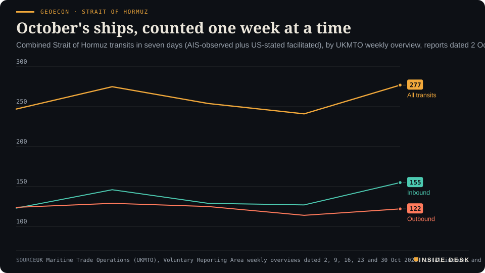
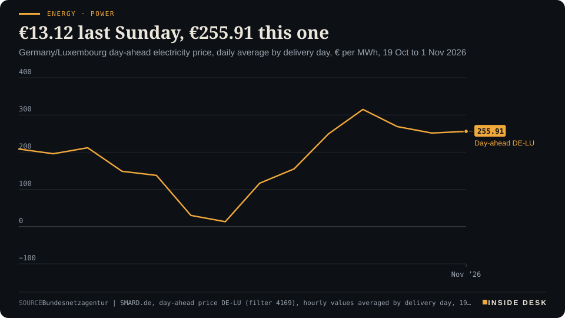
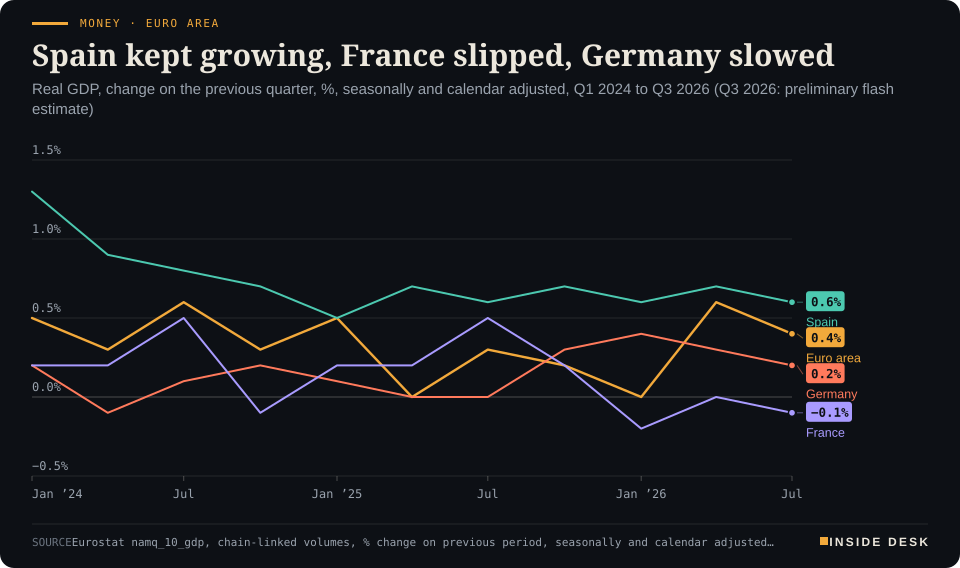
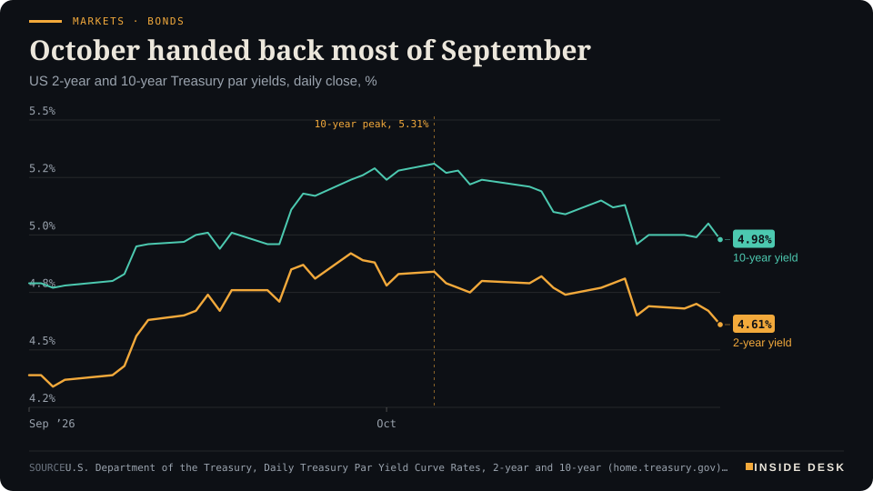
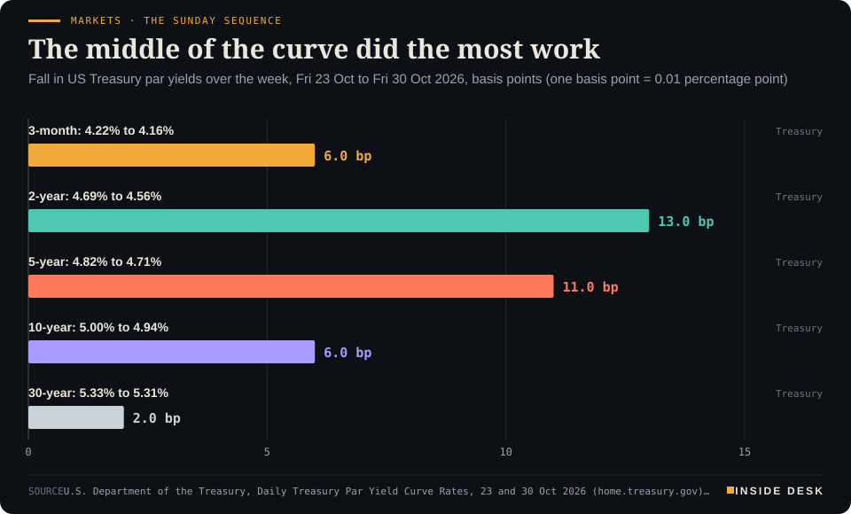
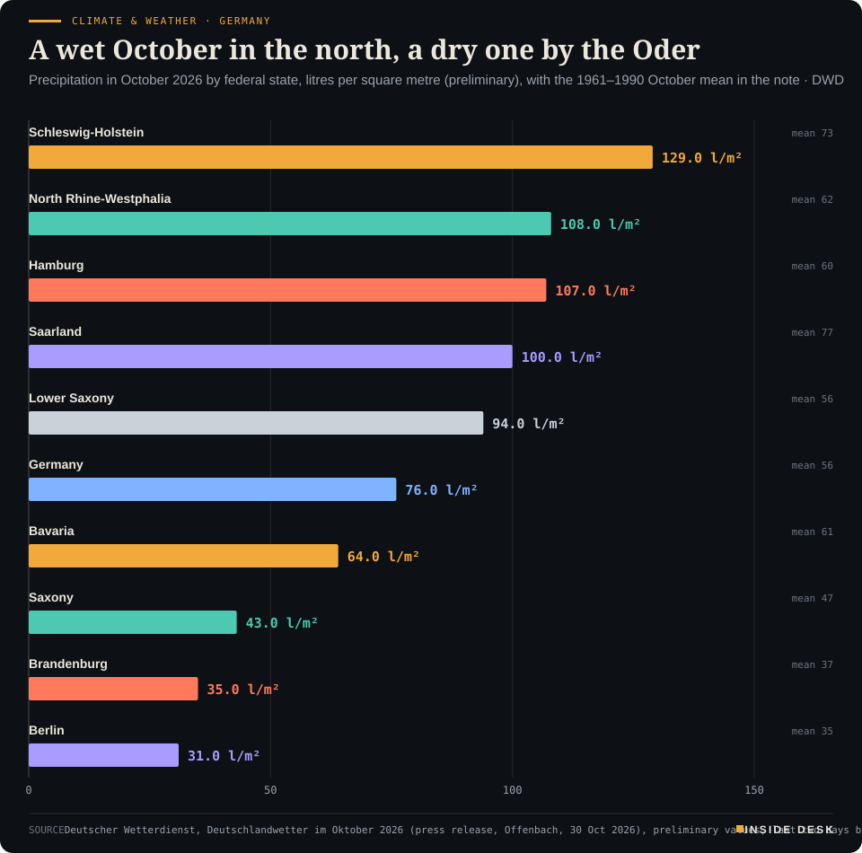

Inside Desk ePaper, Sunday Magazine · Sun 1 Nov 2026
Sunday, 1 November 2026Always free
Inside Desk
The Sunday MagazinePublished 10:15 CET · Berlin
Cover story · Geo-economics
Speeches about Hormuz filled the week; the paperwork counted 277 transits, a contract that expired $4.21 above its successor, and two central banks that held and pointed at December. November opens with a heating bill worth reading.
Geoecon · Strait of HormuzOctober's ships, counted one week at a timeCombined Strait of Hormuz transits in seven days (AIS-observed plus US-stated facilitated), by UKMTO weekly overview, reports dated 2 Oct to 30 Oct 2026

Line chart of weekly Strait of Hormuz transits reported by UKMTO, from the overview dated 2 October to the one dated 30 October 2026. All transits go 247, 275, 254, 241 and 277, the latest value and the highest of the five weeks. Inbound transits go 123, 146, 129, 127 and 155, the latest value. Outbound transits go 124, 129, 125, 114 and 122, the latest value. UKMTO describes the latest week as approximately 70% below pre-conflict levels.
Source: UK Maritime Trade Operations (UKMTO), Voluntary Reporting Area weekly overviews dated 2, 9, 16, 23 and 30 Oct 2026, total inbound and outbound transits last 7 days (AIS derived via S&P plus US NCAGS stated facilitated transits, which UKMTO says it cannot independently verify); totals are Inside Desk arithmetic · retrieved 1 Nov 2026 · CSV
Markets & Macro · p. 6
Energy & Industry · p. 10
Climate & Weather · p. 16
The week in one sentenceShares rose three days on a prospectus and fell two on the accounts, two central banks held and pointed at December, and at home November opened with a dearer parcel, a cheaper family train and a heating bill worth reading.
ContentsInside Desk · Sunday Magazine1 November 2026
Speeches about Hormuz filled the week; the paperwork counted 277 transits, a contract that expired $4.21 above its successor, and two central banks that held and pointed at December. November opens with a heating bill worth reading.
11 edition pieces · 11 desks · Published 10:15 CET, 1 November 2026
22 ePaper extras, added , 1 November. They appear only in the ePaper and carry their own time.
17:30 Evening ePaper, updated live until 22:30 with an “Updated” time and a Latest page
Sun 10:00 The Sunday Magazine
Berlin time. Every issue is free.
How to read it
Swipe, use the arrow keys or the page strip. Tap any headline for the reading view. Press / to search, t for contents, +/− to zoom. Download the PDF.
The Sunday SequenceInside Desk · Sunday Magazine1 November 2026
Geo-economics · The Sunday Sequence · 7 min
Speeches about Hormuz, Iran and Russian diesel filled the week. The paperwork told a steadier story: 277 transits, a contract that expired $4.21 above its successor, and General License No. 135, with three tankers of Russian diesel due on the US East Coast by about 11 November.
There were two weeks in the Gulf this week. One was spoken. It had a vice-president’s letter, a supreme leader’s call to end “the impasse”, Qatari mediators flying back to Tehran barely a day after leaving it, and reports that Washington and Israel are preparing for possible military action after Tuesday’s US midterm elections4,6. The other was written down. It had a weekly ship count from a British maritime office, an expiring oil contract, and a six-month permit from the US Treasury with a number on it. This long read is about the second week, because the second week is the one you pay for.
The count. Each Friday in October, UK Maritime Trade Operations, the British maritime security office that takes reports from merchant ships, has published a two-page overview of the Strait of Hormuz. On 30 October it counted 122 outbound and 155 inbound transits over seven days, against 114 and 127 the week before1. It called that “approximately 70% below pre-conflict levels”1. Desk arithmetic: 277 transits against 241 is 36 more ships, a rise of about 15%, and the highest weekly total in the five overviews UKMTO published in October1,2.
The chart is unexciting on purpose. Five Fridays, five numbers between 241 and 2771,2. October was not the month the strait reopened, and it was not the month it closed. It was the month it kept being counted, by the same office, the same way, so that a reader in Frankfurt can compare one Friday with the last.
The small print matters as much as the totals. UKMTO’s figure combines two kinds of ship: those its analysts can see broadcasting on AIS, the transponder system, and those the US Navy says it has escorted or facilitated, which UKMTO says it “cannot independently verify”1. AIS-observed transits rose to 64 from 47; the US-stated figure was “roughly level”, outnumbering the visible ships by about three to one1. Most visible ships still route through the channel Iran calls its own, though UKMTO notes more using the southern route1. Eighty per cent of the transits the US reports are energy carriers1.
An independent tracker shows how thin the visible part is. On Saturday, hormuz.now counted 11 AIS-visible commercial crossings, four inbound and seven outbound, four of them tankers, against a seven-day average of 8.3 a day and a pre-crisis baseline of 84.8 a day5. That counts a narrower set of ships with a different method, so it does not contradict UKMTO’s 277. It explains why the official figure leans so heavily on ships nobody outside a navy can see.
The ledger of damage. The same office keeps a second column. UKMTO has received reports of 88 incidents in the strait since the war began on 28 February, and its data suggest at least 35 attacks on shipping in the Gulf and the strait in October, the worst month of the war; March, with about 30, was the second worst3. It rates the threat “severe”, meaning an attack is considered highly likely4.
One of October’s incidents is a lesson in how ledgers connect. On Thursday a small boat attached two explosive devices to an outbound tanker 25 nautical miles north-east of Khasab, starting an engine-room fire; the crew were safe and the ship continued to its next port4. Maritime security sources named it the Panama-flagged Louise 1 and called it the first known successful limpet-mine attack in the area since the war began4. The same tanker, Reuters reported, was struck by Ukrainian naval drones in the Black Sea in July, over its alleged role in carrying Russian oil for the so-called shadow fleet4. One hull, two wars, two incident reports. The ship’s paperwork knows more about this conflict’s geography than most of its commentary.
The price. On Friday the December Brent contract expired. It settled at $117.64 a barrel, up $2.76 on the day, after touching $118; the more active January contract settled at $113.436. Brent finished October 13.6% higher and US crude 15.2% higher6. Desk arithmetic: the expiring month closed $4.21 above the one behind it. A front month that much dearer than the next says buyers were paying for barrels they needed now. It also means the headline price on Monday’s screens will be about four dollars lower without anybody having sold anything. That is a calendar change, not a calm market.
The Sunday SequenceInside Desk · Sunday Magazine1 November 2026
Geoecon · Strait of HormuzOctober's ships, counted one week at a timeCombined Strait of Hormuz transits in seven days (AIS-observed plus US-stated facilitated), by UKMTO weekly overview, reports dated 2 Oct to 30 Oct 2026
Line chart of weekly Strait of Hormuz transits reported by UKMTO, from the overview dated 2 October to the one dated 30 October 2026. All transits go 247, 275, 254, 241 and 277, the latest value and the highest of the five weeks. Inbound transits go 123, 146, 129, 127 and 155, the latest value. Outbound transits go 124, 129, 125, 114 and 122, the latest value. UKMTO describes the latest week as approximately 70% below pre-conflict levels.
Source: UK Maritime Trade Operations (UKMTO), Voluntary Reporting Area weekly overviews dated 2, 9, 16, 23 and 30 Oct 2026, total inbound and outbound transits last 7 days (AIS derived via S&P plus US NCAGS stated facilitated transits, which UKMTO says it cannot independently verify); totals are Inside Desk arithmetic · retrieved 1 Nov 2026 · CSV
The Reuters report carried a quieter fact that belongs in the same ledger. Saudi Arabia’s crude exports rose in October from September, according to two of three ship-tracking companies, despite the attacks in the Gulf and Houthi claims of strikes on Saudi oil sites6. Two of three is not unanimity, and this desk will not turn it into a trend. But it is the kind of sentence that gets written by people counting cargoes, not by people giving interviews.
The licence. The week’s most consequential piece of paper was not new. It was dated 9 October and numbered 135. OFAC’s General License No. 135 authorises “all transactions” otherwise banned under two US sanctions regulations that relate to the sale, delivery, offloading or importation of Russian-origin diesel, until 7 April 20277. The lawyers at Clyde & Co note that it sits in tension with the Ending Importation of Russian Oil Act of 2022, which lets the president lift the import ban only by certifying conditions to Congress, and that the details of the diesel deal itself “have not been publicized in any official format”7.
This week the licence became cargo. Three tankers carrying about 140,000 tonnes of Russian diesel were crossing the Atlantic, Fox News reported on Tuesday, and Russia’s deputy prime minister Alexander Novak said a fourth was expected to leave on 28 October8. The first, the Malta-flagged Agioi Fanendes, carries about 40,000 tonnes and signals New York, with an estimated arrival around 7 November; the Talisman is due on the East Coast around 9 November and the Leruo around 11 November8. The Talisman is sanctioned by the US, the UK and the EU; the Leruo by the EU, the UK and Canada8. A US licence covers US law. …
Geo-economicsInside Desk · Sunday Magazine1 November 2026
Washington swapped 22 Canadian product lines out of its 50% duties and 100 in. The annex reads like an inventory, and that is the point.
At 12:01 a.m. Eastern time on Friday, 05:01 in Berlin, the list of Canadian goods paying an extra 50% to enter the United States changed1. The proclamation, signed on 23 October and published on Friday, takes some products off the list in one annex and puts others on in another1. The duty comes on top of any Section 232 tariffs1.
Canada News Media, which went through the annex, counts 22 lines removed and 100 added2. Off come seven lines of thin plywood, corrugated cartons, paper sacks, coated paperboard, plastic plates and bags, some food-packing machinery, and edible seaweed2. On go carpets and floor coverings, 43 lines by themselves, cocoa powder with 13, plus paints, soaps, shampoos, lubricants, window air conditioners, chest freezers of up to 800 litres, canoes and archery equipment2. It is the third change to these duties in as many months, according to Flexport as cited by the outlet2.
The annex gives no reason for each choice, and no official figure for the value of trade affected has been published2. An importer has already challenged the duties at the US Court of International Trade, and the two governments are working on a narrower deal on steel and autos2.
For you, the lesson is about where trade policy really lives. A speech says “Canada”. A proclamation says HTSUS codes, with an effective minute. For a Canadian carpet exporter, the week’s diplomacy arrived on Friday as a line in a customs schedule. If you want to know what a tariff does, read the annex. Nothing here is investment advice.
Geo-economics · Brief · ePaper extra, added
Lloyd’s List Intelligence recorded 1,195 Suez Canal transits, 111 million deadweight tonnes, from 28 September to 25 October, up from 1,151 in the previous four weeks; it says the canal is on track for another record-breaking month1. Crude tanker voyages through Suez, 301 in four weeks, have surpassed 2023 levels1. Containerships are returning from the Cape of Good Hope: 281 in four weeks, against 474 in October 20231. In tonnage terms the canal is still 36% below its pre-Houthi level, and the threat to shipping remains “substantial”, although UKMTO reports no attacks in the Red Sea since 24 August1.
One strait is still choked; another gate is filling up again. Routes are not destiny. They are choices, made weekly by people who read the risk reports.
Markets & MacroInside Desk · Sunday Magazine1 November 2026
Markets & Macro · 2 min
The week opened on an IPO filing and closed on cash-flow statements. The S&P 500 lost 0.57%. The order of the days explains more than the total.
On Sundays this desk puts the week back in order: not by the size of the headlines but by when prices moved. This week the order was simple to describe and instructive to read. Three days of buying on a promise, then two days of selling on the accounts.
Monday: a prospectus. Anthropic filed publicly for a stock-market listing, and chipmakers rallied on it1. The S&P 500 rose 0.7% to 7,676.77 and the Nasdaq 0.82% to 26,169.381. The iShares semiconductor fund rose nearly 3%, and Brent fell 0.8% to $115.81 a barrel1. The filing was not a profit. It was an invitation to imagine one.
Tuesday: a loan. Banks and Blackstone announced $63 billion of financing for buying Broadcom technology for Anthropic, and Broadcom rose 4%2. The S&P 500 gained 0.6% to 7,722.60 and the Nasdaq 1.18% to 26,477.812. Brent fell 1.67% to $113.882. Note the instrument: the good news of the day was a debt arrangement.
Wednesday: a pause. The Federal Reserve held rates at 3.75% to 4%, as futures had priced at almost 93%3. The S&P 500 rose 0.28% to 7,743.98, its third winning day in a row3. Then Alphabet and Microsoft reported after the bell3.
Thursday: the first invoice. Alphabet’s revenue missed and its cash burn accelerated; the shares fell 12.6%4. The Nasdaq lost 1.37% to 26,184.72, the S&P 500 0.30%4. Yet small companies rose: the Russell 2000 gained 1.0%4. “Cracks in the AI story” did not mean “cracks in every corner of the market,” said Baird’s Ross Mayfield4.
Friday: the second invoice. Amazon reported negative free cash flow of $42.4 billion, Intel fell almost 29% on a weak outlook, and the Nasdaq lost 2.86% to 25,437.00, its worst day since June5. The S&P 500 fell 1.82% to 7,580.07; staples and healthcare rose5. On the week, the S&P 500 lost 0.57%6. Desk arithmetic: from Wednesday’s close to Friday’s, the S&P 500 gave up 2.1%, more than the three good days had added.
Underneath, the bonds. While the shares swung, Treasuries rallied all week. The 2-year yield fell from 4.69% to 4.56% and the 10-year from 5.00% to 4.94% between the two Fridays7. The middle of the curve moved most; the 30-year barely moved.
Markets & Macro · Short item · ePaper extra, added
The month the AI trade was asked for receipts. The money did not leave the market. It walked to the soap aisle.
October is over, and the month’s ledger is easier to read than any single day of it.
The averages. The Nasdaq fell 5.3% in October, its steepest monthly drop since March 20251. The S&P 500 slipped 0.9%. The Dow, heavier in banks, oil and household brands, gained 1.7%1.
Markets & Macro · Brief · ePaper extra, added
By Thursday, 253 of the S&P 500 companies had reported for the third quarter, and 81% of them had beaten analysts’ expectations, according to LSEG data1. Analysts now expect aggregate earnings growth of 31.0% on the year1. Those are not the numbers of a weak quarter.
Beating is not the same as being rewarded. Caterpillar topped profit estimates but left its growth targets unchanged, and its shares fell 9.3%1. Ford rose 12.4% on a revenue beat and Eli Lilly 6.6% after lifting its outlook1. The market is paying for the next line, not the last one. Nothing here is investment advice.
Politics & InstitutionsInside Desk · Sunday Magazine1 November 2026
Politics & Institutions · Podium vs Print · 2 min
The president told a Florida rally the campaign trail was wearing him out. The voters had already done most of the walking.
Podium
“I thought this was it. I thought I could relax. Twenty-eight days of this crap in a row is a lot.”
Donald Trump, US president, at a rally in Florida, Friday 30 October 2026, evening (local time)
Print50.5 million
More than 50.5m early votes cast, already nearly 5m more than all early votes in the 2022 midterms.
University of Florida Election Lab early-vote tracker, as reported by the Guardian, Saturday 31 October 2026, morning (US time)
The podium. On Friday night, at a rally in Florida, Donald Trump let the audience see the effort. “I thought this was it,” he said. “I thought I could relax. Twenty-eight days of this crap in a row is a lot. It’s a lot”1. The Guardian notes that he has been holding rallies in previously safe states to lift struggling Republican candidates, with a third trip to Texas in a month this week1. It was a candid line, and it was about him.
The print. By Saturday morning, more than 50.5 million Americans had cast early votes, according to the University of Florida’s election lab, as reported by the Guardian1. That is already nearly 5 million more than the total number of early votes in the 2022 midterms, with three days still to go1. Early voting is up 83% in South Carolina against the last midterms, 44% in Maine, 34% in Kansas and 32% in Michigan, according to the Associated Press1.
The gap. The podium describes a tiring month. The print describes a country that did not wait to be asked twice. In states that record party registration, 10.7 million registered Democrats have voted so far against 7.8 million registered Republicans1. Read that carefully, as the Guardian and the lab both insist: registration is not a vote, and no ballot is counted before Tuesday1,2. The figure tells you who turned up early, not whom they chose.
What it does not say. A record early vote is not a forecast. Some of it is habit shifting from election day to the weeks before, and some is plain enthusiasm; the trackers cannot tell the two apart, and this desk will not pretend to. What the number does show is the machinery working: county clerks, postal ballots, volunteers at folding tables, all processing a record queue before the first result exists.
For you. Watching from Europe, the useful habit is the one this format exists for. Hear the speech, then find the count. On Tuesday the speeches will multiply. The count will arrive more slowly, state by state, and it will be the only thing that matters.
Politics & Institutions · Short item · ePaper extra, added
While Washington votes, the Bundestag's budget committee works through its last ministries. The decisive sitting is on 12 November, and it usually ends after midnight.
The German federal budget for 2027 is not decided in speeches but in a calendar, and the Bundestag publishes it1. This week the 42 members of the budget committee take the transport and digital ministries on Wednesday 4 November, then housing, research and the Foreign Office on Thursday 5 November1. The Bundestag’s own budget and the finance ministry follow on 11 November1.
Then comes the Bereinigungssitzung on Thursday 12 November, the “clean-up” sitting where the most contested questions, set aside until then, are settled; in the past it has often run into the early hours of the next day1. The final four-day debate runs from Tuesday 24 to Friday 27 November1.
The money on the table is smaller than the hopes. The autumn tax estimate gives the federal government €4.1 billion more for 2027 than expected, and all levels of government €10.9 billion more2. But a better economy also lowers the borrowing allowed under the debt brake’s cyclical component. “For 2027 we gain no new room overall, but we also don’t have to close new gaps,” Finance Minister Lars Klingbeil said2. …
Politics & InstitutionsInside Desk · Sunday Magazine1 November 2026
In Harris County, which includes Houston, 862,700 people had voted early by Wednesday, an Associated Press analysis found, against 564,500 at the same point in 20221. Desk arithmetic: about 53% more. Statewide, Texas has passed 7 million early votes, 1.5 million more than in the whole 2022 early period, according to University of Florida data1. On the ballot: a Senate race between the Republican attorney general, Ken Paxton, and the Democrat James Talarico, into which hundreds of millions of dollars have poured, and Governor Greg Abbott’s re-election against Gina Hinojosa1. Democrats have not won a statewide race in Texas for more than three decades1. Turnout is not a result; Tuesday is.
Psychology & BehaviourInside Desk · Sunday Magazine1 November 2026
Psychology & Behaviour · 2 min
Michigan's final October reading barely moved. Underneath, Americans felt a little better about next year and a lot worse about buying anything big today.
A headline index can hide a week’s worth of psychology. The University of Michigan’s final consumer sentiment reading for October came in at 48.0, against 48.1 in September and 53.6 a year ago1. Desk arithmetic: a change of one tenth of a point. If you stop there, nothing happened. Two lines below, a great deal did.
Two moods in one survey. The index of current economic conditions fell from 50.9 to 46.7, while the index of consumer expectations rose from 46.3 to 48.81. People felt somewhat better about the road ahead and clearly worse about where they stand. The survey’s director, Joanne Hsu, says the drop in current conditions was “driven entirely” by buying conditions for durable goods, which “plunged 18%” on higher interest rates and worries about affordability1. Year-ahead business conditions improved by about 14%, but remain 16% below last October1.
The price tag in the head. Expected inflation for the year ahead rose from 4.6% to 4.7%, against 3.4% in February, before the Iran conflict began; long-run expectations rose from 3.4% to 3.5%1. Both horizons have risen for two months in a row, to their highest since May1. “Purchasing power continues to dominate consumer views of the economy,” Hsu writes1. Sentiment is 15% below February1. Increases among Republicans and Democrats were offset by declines among independents1, which is a reminder that a national mood is an average of tribes.
The same shape in Nuremberg. German households, surveyed on the other side of the Atlantic, drew the same picture on Wednesday. NIM’s consumer climate edged down to −30.8 for November while economic expectations rose for a sixth month in a row and the willingness to make big purchases slipped again2. In both countries people are separating the country’s prospects from their own wallets, and trusting the wallet.
For you. This is not gloom; it is bookkeeping. …
Psychology & Behaviour · Short item · ePaper extra, added
A German study of 14,443 adults under 52 splits loneliness in two: missing someone close, and missing a circle. Age pushes them apart.
Researchers at the Federal Institute for Population Research in Wiesbaden, writing in BMC Public Health on Thursday, analysed 14,443 adults aged 18 to 51 from the German family demography panel, FReDA1. They used a standard scale that separates two kinds of loneliness: emotional, the lack of someone close, and social, the lack of a wider network of people to rely on1.
The counts. 24.3% reported intense emotional loneliness, 29.6% intense overall loneliness and 35.8% intense social loneliness1. Overall loneliness barely changed with age. …
A week after Europe’s clocks went back, a useful preprint, not yet peer reviewed. Researchers compared Fitbit sleep data from 1,522 people around 13 clock changes in Colorado, New Mexico and Utah with the same dates in Arizona, which does not change its clocks1. After the autumn change, sleep timing moved about 28 minutes earlier1. Large departures from someone’s usual sleep length typically returned to normal within two nights, but almost the same two-night pattern appeared in Arizona after similarly large departures1. The authors’ point: a fast return to baseline is not the same as recovery from the clock change1. People whose sleep varied most beforehand were likeliest to still be off a week or two later1. A steady bedtime is the cheap defence.
Energy & IndustryInside Desk · Sunday Magazine1 November 2026
Energy & Industry · 2 min
Two Sundays, one week apart, and the same quiet day of the week priced nearly twenty times higher. The storm left; the wind went with it; the bill came back.
Last Sunday, 25 October, German and Luxembourg buyers paid a daily average of €13.12 per megawatt hour for electricity on the day-ahead market1. Storms were crossing the country, and the wind was doing the work. This Sunday, 1 November, All Saints’ Day and a public holiday in parts of Germany, the same auction settled at €255.911. Same day of the week, lower demand than a working day, and a price nearly twenty times higher. By SMARD’s daily series, it is the fourth-dearest delivery day of 2026, behind only 29 and 30 October and 14 September1.
Energy · Power€13.12 last Sunday, €255.91 this oneGermany/Luxembourg day-ahead electricity price, daily average by delivery day, € per MWh, 19 Oct to 1 Nov 2026

Line chart of the daily average German-Luxembourg day-ahead electricity price for the two weeks from 19 October to 1 November 2026, in euros per megawatt hour. In the first week it falls from €208.44 on Monday 19 October to €30.12 on Saturday 24 October and €13.12 on Sunday 25 October, during the storm. In the second week it climbs to €314.85 on Thursday 29 October, then holds at €268.62 on Friday and €251.42 on Saturday. The latest value is €255.91 for delivery on Sunday 1 November.
Source: Bundesnetzagentur | SMARD.de, day-ahead price DE-LU (filter 4169), hourly values averaged by delivery day, 19 Oct to 1 Nov 2026, retrieved 1 Nov 2026 · CC BY 4.0 · CSV
The week in prices. The chart is the whole fortnight, taken straight from the regulator’s market-data platform1. The first week slid from €208.44 on Monday 19 October to €30.12 on the Saturday and €13.12 on the Sunday. The second climbed back: €116.57 on Monday 26 October, €249.21 on Wednesday, €314.85 on Thursday, the dearest day of the year so far, then €268.62 on Friday and €251.42 on Saturday1. …
Energy & Industry · Short item · ePaper extra, added
Monday to Saturday, week against week, the German power system swapped turbines for boilers. The meters recorded it without comment.
Put two working weeks side by side, Monday to Saturday, and the German electricity system tells its own story in the regulator’s published meter data1.
Wind. From 19 to 24 October, onshore and offshore wind together generated about 4,226 GWh. From 26 to 31 October, about 2,072 GWh1. Desk arithmetic: 49% of the week before, so roughly half.
Lignite. Up from about 1,201 GWh to about 1,563 GWh1. Desk arithmetic: about 30% more. …
Energy & Industry · Brief · ePaper extra, added
Brent’s December contract expired on Friday at $117.64 a barrel, up $2.76 on the day and its highest level since the end of April, Reuters reported1. For October, Brent rose 13.6% and US crude 15.2%1. The more active January contract closed at $113.431. Desk arithmetic: $4.21 lower, so the market is paying a premium for barrels now over barrels later. Behind it: a limpet-mine attack on a tanker in the Strait of Hormuz, and Houthi claims of strikes on Saudi refineries1. A quieter line in the same report: Saudi crude exports rose in October, according to two of three ship-tracking firms1. Nothing here is investment advice.
Money, FX & CommitteesInside Desk · Sunday Magazine1 November 2026
Money, FX & Committees · 2 min
The Fed held with two hands up for a hike. The ECB held unanimously after debating one. Neither said yes; neither said no; both told you when they will look again.
Two central banks met this week, a day apart, and did the same thing in different ways. Both held. Both said energy is the problem. Both left December open. The difference is in who wanted to move now.
Wednesday, Washington. The Federal Open Market Committee kept its target range at 3.75% to 4% by a vote of 10 to 21. Governor Lisa Cook and Cleveland Fed President Beth Hammack voted against; both wanted a rise of a quarter point1. CNBC noted it was Cook’s first dissent since she joined in 20222. The statement said inflation “remains elevated” and that “the accumulation of more information” will guide the next step; it upgraded growth to “expanding at a strong pace”1. Inflation has been above the Fed’s 2% goal for more than five years2.
Thursday, Frankfurt. The ECB kept its deposit rate at 2.50%, the main refinancing rate at 2.65% and the marginal lending rate at 2.90%3. “Energy prices have continued to rise,” the Governing Council said, with upside risks for inflation and downside risks for growth3. Euro-area inflation was 3.8% in September6. Christine Lagarde said the Council “debated whether a hike was appropriate” and then decided unanimously to wait4. After the decision, money markets priced about a 67% chance of a December rise, according to LSEG data cited by CNBC4.
The second brake. The more interesting line was about bonds. Long-term borrowing has already become dearer: Lagarde said the average 10-year sovereign yield in the euro area had risen around 35 basis points since the previous meeting4. Reuters reported ECB estimates showing that rise would lower growth by a cumulative 100 basis points and inflation by 90 basis points in 2027–28, compared with the September baseline5. In plain words: the market has tightened for the ECB, and the ECB is counting it.
What it means at home. For your savings account and your mortgage offer, the policy rate did not move this week; the bond market did, and banks price long fixed-rate loans off the bond market. Read your next offer against that, not against the headline. Nothing here is investment advice.
The dull reassurance. Neither bank improvised. …
Money, FX & Committees · Short item · ePaper extra, added
The ECB president announced an early departure on the morning of a rate meeting. The institution's answer was a three-line press release.
On Thursday, before the ECB’s rate decision, Christine Lagarde told the Governing Council and European Council President António Costa that she will step down on 7 February 20271. Reuters noted that the rate decision was published only hours later2.
What the ECB said. The press release is short. …
Money, FX & Committees · Brief · ePaper extra, added
After Wednesday’s hold, Fed Chair Kevin Warsh said the committee would keep eight meetings a year, but in 2027 one of them “will focus exclusively on broad monetary policy strategy, with neither a vote on the federal funds rate nor a policy statement anticipated”1. In 2028 he expects two strategy meetings and six for setting policy1.
Desk arithmetic: that means seven rate decisions in 2027 instead of eight, and six in 2028. Fewer decisions is not the same as less vigilance; a committee that schedules time to argue about its framework is more likely to explain itself clearly when it does move. Markets will want to know which meeting is the quiet one. It is a small change, well announced.
Ordinary & Inherited LifeInside Desk · Sunday Magazine1 November 2026
Ordinary & Inherited Life · 2 min
November starts the heating season. The household ledger has three lines to check this week: the gas tariff, the fuel board and the date your tank rebate runs out.
On the first Sunday of November the ledger turns from the pump to the boiler. Both matter this week, and both have numbers you can check yourself.
The boiler. Verivox puts the average price of a new gas contract at about 14 cents per kilowatt-hour, for a household using 20,000 kWh a year, as of 30 October1. Across all customers, old contracts and new, the average was about 12.7 cents on 1 October1. In January, Verivox’s table showed a family in a 180 m² house paying 9.87 cents and €1,974 a year1. Many suppliers are raising their prices, says its energy expert Thorsten Storck, and anyone who receives an increase should compare it with the offers available now1.
Desk arithmetic: 20,000 kWh at 14 cents is €2,800 a year; at 12.7 cents it is €2,540. The €260 between the two is the price of signing a new contract this month rather than sitting on an older one, which is a reason to read your price guarantee’s end date before you switch, not after.
The pump. ADAC’s latest weekly reading found Super E10 at €2.084 a litre, down 2.6 cents, and diesel at €2.289, up 3.4 cents; diesel now costs over 20 cents more2. The club blames dearer crude, a tight diesel market and rising heating-oil demand as the weather turns2. The tank rebate, a cut of about 17 cents a litre including VAT, runs from the start of October to the end of December2. The government wants a fuel-price cap by 1 January 2027 at the latest2.
The kitchen, for balance. Food prices rose just 0.4% on the year in October, Destatis said on Friday; household energy rose 12.2%3. This winter’s squeeze is in the meter cupboard, not the fridge.
What you can do with that. ADAC’s advice still holds: fill up shortly before noon, since prices may only rise once a day at 12:00, and compare stations in its app2. Verivox’s advice is the gas version of the same habit: compare when the letter arrives1. Neither is glamorous. Both are worth more than a forecast.
Ordinary & Inherited Life · Short item · ePaper extra, added
Four changes start this month. One costs you, one saves you money, one protects you, and one is a deadline.
New months bring new rules, and November’s are unusually practical.
Parcels from outside the EU cost more. From 1 November, a handling fee of €2 applies for each product category in a parcel from a non-EU country1. A parcel with a T-shirt and a hair clip pays €4; several T-shirts pay only €21. Together with the extra duty introduced in July, a parcel can cost at least €5 more1. The sender pays first but may pass the fee on1. …
Ordinary & Inherited Life · Brief · ePaper extra, added
Car insurance. For most policies, your cancellation must reach your insurer by 30 November if you want to switch at the turn of the year1. The good news: according to a Verivox analysis cited by t-online, policies cost on average only 2% more than a year earlier at the start of the switching season, and in the cheapest segment prices fell by almost 2%1.
Tax. If you know you will claim high work-related expenses or special costs, you can apply to the tax office for a wage-tax reduction (Lohnsteuerermäßigung)1. Apply by 30 November 2026 and the allowance counts for 2027 and backdates to the whole of 2026, applied in December’s payslip1. It can be done online through Elster1. Two forms, one date, and the money arrives in your account rather than at tax-return time.
Tech & ComputeInside Desk · Sunday Magazine1 November 2026
Tech & Compute · 2 min
Friday's 29% fall was about a forecast. The quarterly report, filed alongside it, is about where the money came from and where it has been promised to go.
On Thursday evening Intel told investors to expect fourth-quarter revenue of $15 billion to $16 billion, against the $17.1 billion analysts had pencilled in, and adjusted earnings of 25 cents a share against 432. On Friday the shares lost 29%, their worst day since the 1970s3. The call explained the mood. The 10-Q, accepted by the SEC late on Thursday, explains the plumbing1.
Where the cash came from. In the first nine months of 2026 Intel’s operations brought in $13.18 billion of cash, against $5.41 billion a year earlier, and it spent $10.22 billion on property, plant and equipment1. That is real progress. But the bigger numbers sit lower down: $22.6 billion of net proceeds from a public share offering, $13.0 billion of new term debt against $9.0 billion repaid, and $5.0 billion of contributions from its partner in the Arizona fab joint venture1. Going the other way were $14.4 billion of partner distributions; the filing’s ownership table shows the outside partner’s 49% stake in the Ireland venture down to nothing1. Cash and short-term investments ended September at $54.0 billion, up from $37.4 billion at the end of 2025, while total debt rose from $46.6 billion to $50.1 billion1.
Where it is promised to go. Commitments for capital spending stood at $19.6 billion at the end of September, against $12.8 billion at the end of 2025, and other purchase obligations at $9.8 billion, against $6.7 billion1. “The substantial majority” of the capital commitments fall due within twelve months1. After the quarter closed, Intel signed two agreements to secure substrate supply, with total funding requirements estimated at $5.3 billion to $6.1 billion, about $3.3 billion of it payable by the end of 20271. It made $1.2 billion of supply prepayments this year, and holds $1.2 billion of customer deposits paid to secure future product1. The two figures are the same size: Intel is paying its suppliers to hold a place in the queue, and some of its customers are paying Intel to do the same.
The stockroom. Inventories rose from $11.6 billion to $13.1 billion, most of it work in progress ($8.8 billion)1. …
Tech & Compute · Short item · ePaper extra, added
The week the hyperscalers' capex came in below forecasts, the best-known buyer of their capacity trimmed its own fundraising target. Neither is a verdict; both are prices.
OpenAI is now seeking up to $20 billion in its latest funding round, down from an earlier target of up to $30 billion, CNBC confirmed on Saturday after the Financial Times first reported the cut1. The FT said the round values the ChatGPT developer at $1.25 trillion after the money comes in, and that OpenAI had set a Friday deadline for investors to commit, with some reducing their allocations1. …
Tech & Compute · Brief · ePaper extra, added
Apple’s conference call on its fiscal fourth quarter is scheduled for Monday 2 November at 14:00 Pacific time1. Desk arithmetic: with US clocks going back today, that is 23:00 CET. Monday’s numbers cover Apple’s fiscal fourth quarter1, so they say little about this week’s launches, which The Verge’s weekly round-up led with a new iPad mini and a touchscreen MacBook Pro2. The new devices are a story for later quarters. The useful thing to look for is the same as with Amazon, Alphabet and Microsoft: not the adjectives on the call, but what the company has committed to spend, and on what. Nothing here is investment advice.
Health & CareInside Desk · Sunday Magazine1 November 2026
Health & Care · 2 min
Germany's two most familiar screening offers are under formal review, and this week the experts were asked for their evidence. Until the end of 2027, nothing you are entitled to changes.
Two appointments that millions of people in Germany know by heart are being looked at again from first principles: the skin-cancer screening every two years from 35, and the general health Check-up. This week the doctors’ association KBV reported that experts from medicine and practice have until 23 November to send in their assessments1. The review itself belongs to the Federal Joint Committee, the G-BA, which must finish by the end of 2027; until then, the KBV notes, the entitlement stays exactly as it is1.
Why now. The review was ordered by parliament in the law meant to stabilise statutory health-insurance contributions1. The reasoning attached to the law is blunt. It says the benefit of the skin-cancer screening, measured as fewer deaths from skin cancer, “has not yet been clearly demonstrated” (desk translation), and says the same of a Check-up that is not limited to people with particular needs or focused on particular diseases1. Check-ups aimed at heart and circulatory disease and their related risks, by contrast, could reduce illness and death, the reasoning says1.
What is on the table. For the skin check, the G-BA must consider who demonstrably benefits, such as people with fair skin, a family history or heavy UV exposure, and whether the two-year rhythm should change1. The offer has been unchanged since 20082. For the Check-up, now available once between 18 and 34 and every three years from 352, the review covers age limits, target groups, frequency, content, differences between the sexes and the target diseases, with a focus on the heart and circulation1. The urine dipstick test and a one-off HIV test within the Check-up will be assessed too1. The evidence review has gone to IQWiG, the institute that weighs studies for the system1.
How to read it. A review driven by a savings law will be read by some as a cut in disguise. …
Health & Care · Short item · ePaper extra, added
The FDA approved the first plasmid-DNA immunotherapy in the US, for a rare HPV disease of the airways. The approval is conditional, and the numbers are small and honest.
On Friday the US Food and Drug Administration granted accelerated approval to Voceryq, from Inovio Pharmaceuticals, for adults with recurrent respiratory papillomatosis1. It is the first plasmid DNA-based immunotherapy approved in the US1.
The disease. HPV types 6 and 11 cause wart-like growths in the airways, mostly around the voice box. They bring hoarseness, coughing and, in severe cases, difficulty breathing. Surgery removes them, but the virus stays in the tissue, so many patients go back to the operating theatre again and again over years1.
Health & Care · Brief · ePaper extra, added
Germany’s digital health applications, the “app on prescription”, are known to 56% of people aged 16 and over, according to a representative Bitkom survey of 1,132 people published on Friday1. 20% have been prescribed one and 15% have redeemed the prescription1. 44% would use an app to bridge a long wait for treatment, and 49% think doctors and psychotherapists should tell patients about them more often1. The makers are gloomier: in a separate, non-representative poll of 34 providers, 85% said their situation had worsened over two years and 76% rated investment security as low or very low, though half plan new apps within 24 months1. Bitkom is the industry’s own association, so read the second half as a plea as well as a finding. The first half is simpler: if you are on a waiting list, ask whether an approved app could help in the meantime.
Security & OrderInside Desk · Sunday Magazine1 November 2026
Security & Order · 2 min
Washington has approved the Patriot missiles Kyiv has been asking for. The notice is precise about who pays. It says nothing about when they arrive, and that silence is the real news.
On Friday the US State Department told Congress it had approved a possible sale to Ukraine of five hundred PAC-3 MSE missiles, the interceptors fired by Patriot batteries, with spare parts and logistics support, at an estimated $2.1 billion1. President Volodymyr Zelensky had said earlier in the week that Ukraine had been waiting almost a month for this sign-off2. The notice reads like an invoice, and it is worth reading like one.
Who pays. The notice is unusually specific. Ukraine will pay “with donations from Canada, Germany, and Norway via the JUMPSTART program and national funds, financed by the European Union’s Ukraine Support Loan”, and “no U.S. funds are involved”1. The principal contractor is Lockheed Martin1. Desk arithmetic: $2.1 billion for 500 missiles is about $4.2 million a missile, with spares and support included. So the money is European and Canadian, the factory is American, and the whole arrangement sits on a loan approved in Brussels. That is a coalition you can audit.
When it arrives. Here the notice is silent. The BBC understands the order is for newly built missiles rather than existing stock, and cites the US Department of Defense for a production rate of only 600 a year2. Reports gathered by the Institute for the Study of War say the new interceptors are not expected until after 20303. Desk arithmetic: 500 missiles is about ten months of that stated output. The BBC also notes a global shortage of these interceptors because of their use by the US in its war against Iran2. Zelensky welcomed the approval and said Ukraine needed the missiles “right now”2.
What the night looked like. The same night, Russia launched 134 drones; Ukraine’s air force said 105 were shot down or suppressed, and drones hit 20 locations4. Strikes on a heat and power plant in Kyiv and four substations in Dnipropetrovsk region left around 200,000 households there and more than 80,000 in Kyiv region without electricity4. …
Security & Order · Short item · ePaper extra, added
The evacuation from the occupied town is over, and both sides largely kept a local ceasefire in force since 27 October. The final number is still missing, and that is the next thing to ask for.
On Friday the buses left Oleshky. By Saturday the operation was finished. The Institute for the Study of War called it “a remarkably successful humanitarian mission”1. Residents of the occupied town in Kherson region flew to Belarus and then crossed into Ukraine’s Chernihiv region, Ukrainian officials said; others chose to stay, or went to Simferopol in occupied Crimea1. …
Security & Order · Brief · ePaper extra, added
Wars are supplied by lorry, and lorries can be counted. Anatoly Tsurkin, who heads the freight carriers’ association in occupied Crimea, said on Saturday that the number of trucks travelling from Russia’s Rostov region to Crimea had fallen from 2,000 to 3,000 a day to 600 to 800 a day1. He said the M-14 highway is the only land route lorries can use, and that Ukrainian drone strikes have also made drivers less willing to make the run1. ISW reports his claim; it did not count the trucks itself1.
Treat it as one man’s figure, not a measurement. But it comes from the side with every reason to understate the damage. Logistics is where long-range strikes show up first: not in maps, but in the number of drivers who turn up for work.
Climate & WeatherInside Desk · Sunday Magazine1 November 2026
Climate & Weather · 2 min
Germany's weather service has closed the books on October: warm, sunny, wetter than usual, and so unevenly wet that the north got three times what the east did.
On Friday the Deutscher Wetterdienst published its preliminary review of October, drawn from roughly 2,000 measuring stations1. The headline is a small relief: about 76 litres of rain per square metre fell across Germany, 36% more than the 1961–1990 October mean of 56 litres, and about a fifth more than the 1991–2020 mean1. It was the first month since February in which Germany as a whole got more rain than its reference value1.
The small print. Read one paragraph further and the relief is rationed. For the year so far, Germany is still about 120 litres per square metre short of the long-term averages, the DWD writes, and soil moisture has not recovered in many places, especially in the southern half and the east1. The rivers say the same: the service notes “very low” water levels on the large rivers1. One wet month has not paid back half a year of dry ones.
The map. The rain fell by postcode, not by nation. The north and west sometimes got three times as much as the east1. Schleswig-Holstein was by far the wettest state, at 129 litres against a mean of 73; Hamburg got almost 80% more than usual1. Berlin got about 31 litres, the least of any state, and parts of the Polish border area under 201. Brandenburg, for the second October running, was among the driest regions1.
Climate & Weather · Short item · ePaper extra, added
Four days after a very severe cyclonic storm, southern Odisha is counting rainfall, villages and evacuees, and delivering food by helicopter.
Cyclone Arnab, classed by the India Meteorological Department as a “very severe cyclonic storm”, brought exceptionally heavy rain to southern Odisha on 28 October1. The IMD’s gauges give the scale better than any adjective: 546 mm at Patrapur in Ganjam district, 503 mm at Sorada, 462 mm at G Udayagiri in Kandhamal and 458 mm at Mahendragarh in Gajapati1.
The Rushikulya and Mahendratanaya rivers swelled, and floods and landslides washed away roads and bridges across seven districts1. State officials count 299 affected villages in Ganjam and 711 in Gajapati, with around 42,500 and 20,000 people affected respectively1. Rescue teams from the national and state disaster forces and the fire services moved 11,882 people in Ganjam and 17,441 in Gajapati into flood and cyclone shelters1. Some villages are still cut off; food is arriving by helicopter, and the Ganjam collector says boats have been arranged for marooned residents1.
There is a quieter line too. …
Climate & Weather · Brief · ePaper extra, added
By 26 October, 42 Somali rain stations with a long record had already reached their October normal, the FAO’s weekly bulletin says: Galkacyo at 532%, Baidoa at 282%1. In the same country, Burao stood at 26% and Qardho at 16%1. On the Shabelle, Belet Weyne rose above its 6.50 m moderate flood-risk level on 26 October and stood at 6.70 m by the 29th, with the daily rise slowing1. The IOM projects that up to 874,319 people could be displaced between October and December, 92% of them by floods; by 21 October it had secured about 14.4% of the US$16.62 million it asked for to prepare2. Desk arithmetic: 14.4% is about a seventh. The rain is measured every day; the money to prepare for it, at last count, was a seventh of the way there.
Weekend readingInside Desk · Sunday Magazine1 November 2026
Weekend reading
The 2026 Ledger
The year so far, month by month, in the order the invoices arrived.
3 January 2026 · Geo-economicsA president removed, a barrel unimpressedVenezuela changed hands over a weekend. The oil market read the supply sheet and went back to its glut. It was right about Venezuela, and about nothing that came next.
20 February 2026 · Politics & InstitutionsThe court sends the invoice backSix justices said a tariff is a tax, and taxes belong to Congress. The refund goes to whoever signed the customs entry, which is rarely the person who paid the higher price.
March 2026 · Energy & IndustryThe month a strait became a priceTwenty million barrels a day stopped moving, and the world's emergency cupboard opened wider than ever before. Both facts were true. Only one of them was a solution.
14 April 2026 · Markets & MacroA reference forecast is a hope with a footnoteThe IMF did not publish a baseline in April. It published a reference case and said, in plain print, that the world was drifting away from it. Read the footnote first.
22 May 2026 · Money, FX & CommitteesA new chair, the same arithmeticThe Federal Reserve changed its chair in the middle of an energy shock. If you expected the new face to bring cheaper money, the committee's next four months are the answer.
11 June 2026 · Money, FX & CommitteesFrankfurt raises into a supply shockThe textbook says look through an energy shock. The ECB chose not to, for the first time in this cycle, and said exactly why. The interesting word was 'robust'.
14 July 2026 · Security & OrderSixty days was the honest clauseA June memorandum promised safe passage through Hormuz, free of charge, for sixty days only. The price fell as if the strait had reopened. It had reopened on paper.
August 2026 · Geo-economicsSix months, five ships a dayHalf a year into the war, the strait carried a twentieth of its old traffic. The world adapted around it, by pipeline, by detour and by drawing down the cupboard. The cupboard was the part with a bottom.
10–16 September 2026 · Money, FX & CommitteesThe bypass breaks, both banks hikeIn one week the pipeline that carried Saudi oil around Hormuz was hit, the ECB raised rates and the Fed did the same. The Fed decided on the very day the ECB's increase took effect. The tank had made the argument for both.
13 October 2026 · Markets & MacroResilience is an inventorySix months after April's warning, the IMF's growth number had not moved and its inflation number had. The Fund's own explanation is a list of things that run down.
The week in desk comments
One line from each desk. Tap to read the piece behind it.
Geo-economics
Markets & Macro
Politics & Institutions
Psychology & Behaviour
Energy & Industry
Money, FX & Committees
Ordinary & Inherited Life
Tech & Compute
Health & Care
Security & Order
Climate & Weather
Data spreadInside Desk · Sunday Magazine1 November 2026
The week in data
Interactive: hover or tap for values, switch series on and off, change the time range.
Geoecon · Strait of HormuzOctober's ships, counted one week at a timeCombined Strait of Hormuz transits in seven days (AIS-observed plus US-stated facilitated), by UKMTO weekly overview, reports dated 2 Oct to 30 Oct 2026
Line chart of weekly Strait of Hormuz transits reported by UKMTO, from the overview dated 2 October to the one dated 30 October 2026. All transits go 247, 275, 254, 241 and 277, the latest value and the highest of the five weeks. Inbound transits go 123, 146, 129, 127 and 155, the latest value. Outbound transits go 124, 129, 125, 114 and 122, the latest value. UKMTO describes the latest week as approximately 70% below pre-conflict levels.
Source: UK Maritime Trade Operations (UKMTO), Voluntary Reporting Area weekly overviews dated 2, 9, 16, 23 and 30 Oct 2026, total inbound and outbound transits last 7 days (AIS derived via S&P plus US NCAGS stated facilitated transits, which UKMTO says it cannot independently verify); totals are Inside Desk arithmetic · retrieved 1 Nov 2026 · CSV
Energy · Power€13.12 last Sunday, €255.91 this oneGermany/Luxembourg day-ahead electricity price, daily average by delivery day, € per MWh, 19 Oct to 1 Nov 2026
Line chart of the daily average German-Luxembourg day-ahead electricity price for the two weeks from 19 October to 1 November 2026, in euros per megawatt hour. In the first week it falls from €208.44 on Monday 19 October to €30.12 on Saturday 24 October and €13.12 on Sunday 25 October, during the storm. In the second week it climbs to €314.85 on Thursday 29 October, then holds at €268.62 on Friday and €251.42 on Saturday. The latest value is €255.91 for delivery on Sunday 1 November.
Source: Bundesnetzagentur | SMARD.de, day-ahead price DE-LU (filter 4169), hourly values averaged by delivery day, 19 Oct to 1 Nov 2026, retrieved 1 Nov 2026 · CC BY 4.0 · CSV
Data spreadInside Desk · Sunday Magazine1 November 2026
Money · Euro areaSpain kept growing, France slipped, Germany slowedReal GDP, change on the previous quarter, %, seasonally and calendar adjusted, Q1 2024 to Q3 2026 (Q3 2026: preliminary flash estimate)

Line chart of quarterly real GDP growth on the previous quarter from Q1 2024 to Q3 2026 for the euro area, Spain, Germany and France. Spain grows every quarter, between 0.5% and 1.3%, and is 0.6% in Q3 2026, the latest value. The euro area moves between 0.0% and 0.6% and is 0.4% in Q3 2026, after 0.6% in Q2. Germany moves between -0.1% and 0.4% and is 0.2% in Q3 2026, after 0.3%. France falls below zero in Q4 2024 (-0.1%) and Q1 2026 (-0.2%), is 0.0% in Q2 2026 and -0.1% in Q3 2026, the latest value. Q3 2026 figures are a preliminary flash estimate and may be revised on 13 November 2026.
Source: Eurostat namq_10_gdp, chain-linked volumes, % change on previous period, seasonally and calendar adjusted (CLV_PCH_PRE, SCA), EA21, ES, DE, FR, dataset updated 30 Oct 2026 11:00 CET with the preliminary flash estimate for Q3 2026 (CC BY 4.0) · retrieved 30 Oct 2026 · CSV
Markets · BondsOctober handed back most of SeptemberUS 2-year and 10-year Treasury par yields, daily close, %

Line chart of the daily US 2-year and 10-year Treasury par yields since 1 September 2026. On 1 September the 2-year is at 4.39% and the 10-year at 4.79%. The 10-year peaks at 5.31% on 5 October; on 30 September the two stand at 4.88% and 5.29%. On Thursday 29 October 2026, the latest value, the 2-year is at 4.61% and the 10-year at 4.98%, 27 and 31 basis points below their end-September levels.
Source: U.S. Department of the Treasury, Daily Treasury Par Yield Curve Rates, 2-year and 10-year (home.treasury.gov), retrieved 30 Oct 2026 · U.S. government data, public domain · CSV
Latest values
Series
Value
Date
Chart
All transits
277
30 Oct 2026
October's ships, counted one week at a time
Inbound
155
30 Oct 2026
October's ships, counted one week at a time
Day-ahead DE-LU
255.91
1 Nov 2026
€13.12 last Sunday, €255.91 this one
Euro area
0.4%
1 Jul 2026
Spain kept growing, France slipped, Germany slowed
Spain
0.6%
1 Jul 2026
Spain kept growing, France slipped, Germany slowed
2-year yield
4.61%
29 Oct 2026
October handed back most of September
10-year yield
4.98%
29 Oct 2026
October handed back most of September
Last data point of the main series in each chart above, from the Inside Desk data archive. Sources under each chart.
Back pageInside Desk · Sunday Magazine1 November 2026
Before you close the tab
The day in one sentence
Shares rose three days on a prospectus and fell two on the accounts, two central banks held and pointed at December, and at home November opened with a dearer parcel, a cheaper family train and a heating bill worth reading.
One thing you can do this week
The heating season starts in earnest this month. Once this week, find your gas or electricity contract and write three things on one sheet of paper: the price per kilowatt-hour, the monthly base charge and the date the price guarantee ends. Put the sheet where the post arrives. When a letter about new prices comes, you will already know what you are comparing.
A habit, not advice.
What went right
Deutsche Bahn's family ticket was meant to be a summer-holiday offer. Demand was high enough that from 1 November it is permanent: €99.99 for a return journey for up to five people, with an ICE seat reservation included 1. A good idea was tried, people used it, and it stayed. That is how public services are supposed to learn.
In euros at home
Verivox puts a new gas contract at about 14 cents per kilowatt-hour for a household using 20,000 kWh a year, as of 30 October; the average across all customers was about 12.7 cents on 1 October 2. Desk arithmetic: at 14 cents that household pays €2,800 a year, at 12.7 cents €2,540, so the gap between a new contract and the average one is about €260 a year, or roughly €22 a month.
Desk arithmetic on the cited figures.
Small words
Hawkish pause
When a central bank leaves interest rates where they are but makes clear it may raise them soon, markets call it a hawkish pause. The ECB did that on Thursday: no change, but its president said a hike had been discussed and the direction was clear. The pause is real; so is the warning that comes with it.
Commentary for information only. Not investment, legal, tax, medical or political advice. Inside Desk is free and reader-supported. Every number is sourced in the piece it appears in.
This issue has been updated.
All articles in this edition
Geo-economics · 7 min read
The Sunday long read: the week was written in ship counts, settlements and a licence number
Speeches about Hormuz, Iran and Russian diesel filled the week. The paperwork told a steadier story: 277 transits, a contract that expired $4.21 above its successor, and General License No. 135, with three tankers of Russian diesel due on the US East Coast by about 11 November.
There were two weeks in the Gulf this week. One was spoken. It had a vice-president’s letter, a supreme leader’s call to end “the impasse”, Qatari mediators flying back to Tehran barely a day after leaving it, and reports that Washington and Israel are preparing for possible military action after Tuesday’s US midterm elections4,6. The other was written down. It had a weekly ship count from a British maritime office, an expiring oil contract, and a six-month permit from the US Treasury with a number on it. This long read is about the second week, because the second week is the one you pay for.
The count. Each Friday in October, UK Maritime Trade Operations, the British maritime security office that takes reports from merchant ships, has published a two-page overview of the Strait of Hormuz. On 30 October it counted 122 outbound and 155 inbound transits over seven days, against 114 and 127 the week before1. It called that “approximately 70% below pre-conflict levels”1. Desk arithmetic: 277 transits against 241 is 36 more ships, a rise of about 15%, and the highest weekly total in the five overviews UKMTO published in October1,2.
Geoecon · Strait of HormuzOctober's ships, counted one week at a timeCombined Strait of Hormuz transits in seven days (AIS-observed plus US-stated facilitated), by UKMTO weekly overview, reports dated 2 Oct to 30 Oct 2026
Line chart of weekly Strait of Hormuz transits reported by UKMTO, from the overview dated 2 October to the one dated 30 October 2026. All transits go 247, 275, 254, 241 and 277, the latest value and the highest of the five weeks. Inbound transits go 123, 146, 129, 127 and 155, the latest value. Outbound transits go 124, 129, 125, 114 and 122, the latest value. UKMTO describes the latest week as approximately 70% below pre-conflict levels.
Source: UK Maritime Trade Operations (UKMTO), Voluntary Reporting Area weekly overviews dated 2, 9, 16, 23 and 30 Oct 2026, total inbound and outbound transits last 7 days (AIS derived via S&P plus US NCAGS stated facilitated transits, which UKMTO says it cannot independently verify); totals are Inside Desk arithmetic · retrieved 1 Nov 2026 · CSV
The chart is unexciting on purpose. Five Fridays, five numbers between 241 and 2771,2. October was not the month the strait reopened, and it was not the month it closed. It was the month it kept being counted, by the same office, the same way, so that a reader in Frankfurt can compare one Friday with the last.
The small print matters as much as the totals. UKMTO’s figure combines two kinds of ship: those its analysts can see broadcasting on AIS, the transponder system, and those the US Navy says it has escorted or facilitated, which UKMTO says it “cannot independently verify”1. AIS-observed transits rose to 64 from 47; the US-stated figure was “roughly level”, outnumbering the visible ships by about three to one1. Most visible ships still route through the channel Iran calls its own, though UKMTO notes more using the southern route1. Eighty per cent of the transits the US reports are energy carriers1.
An independent tracker shows how thin the visible part is. On Saturday, hormuz.now counted 11 AIS-visible commercial crossings, four inbound and seven outbound, four of them tankers, against a seven-day average of 8.3 a day and a pre-crisis baseline of 84.8 a day5. That counts a narrower set of ships with a different method, so it does not contradict UKMTO’s 277. It explains why the official figure leans so heavily on ships nobody outside a navy can see.
The ledger of damage. The same office keeps a second column. UKMTO has received reports of 88 incidents in the strait since the war began on 28 February, and its data suggest at least 35 attacks on shipping in the Gulf and the strait in October, the worst month of the war; March, with about 30, was the second worst3. It rates the threat “severe”, meaning an attack is considered highly likely4.
One of October’s incidents is a lesson in how ledgers connect. On Thursday a small boat attached two explosive devices to an outbound tanker 25 nautical miles north-east of Khasab, starting an engine-room fire; the crew were safe and the ship continued to its next port4. Maritime security sources named it the Panama-flagged Louise 1 and called it the first known successful limpet-mine attack in the area since the war began4. The same tanker, Reuters reported, was struck by Ukrainian naval drones in the Black Sea in July, over its alleged role in carrying Russian oil for the so-called shadow fleet4. One hull, two wars, two incident reports. The ship’s paperwork knows more about this conflict’s geography than most of its commentary.
The price. On Friday the December Brent contract expired. It settled at $117.64 a barrel, up $2.76 on the day, after touching $118; the more active January contract settled at $113.436. Brent finished October 13.6% higher and US crude 15.2% higher6. Desk arithmetic: the expiring month closed $4.21 above the one behind it. A front month that much dearer than the next says buyers were paying for barrels they needed now. It also means the headline price on Monday’s screens will be about four dollars lower without anybody having sold anything. That is a calendar change, not a calm market.
The Reuters report carried a quieter fact that belongs in the same ledger. Saudi Arabia’s crude exports rose in October from September, according to two of three ship-tracking companies, despite the attacks in the Gulf and Houthi claims of strikes on Saudi oil sites6. Two of three is not unanimity, and this desk will not turn it into a trend. But it is the kind of sentence that gets written by people counting cargoes, not by people giving interviews.
The licence. The week’s most consequential piece of paper was not new. It was dated 9 October and numbered 135. OFAC’s General License No. 135 authorises “all transactions” otherwise banned under two US sanctions regulations that relate to the sale, delivery, offloading or importation of Russian-origin diesel, until 7 April 20277. The lawyers at Clyde & Co note that it sits in tension with the Ending Importation of Russian Oil Act of 2022, which lets the president lift the import ban only by certifying conditions to Congress, and that the details of the diesel deal itself “have not been publicized in any official format”7.
This week the licence became cargo. Three tankers carrying about 140,000 tonnes of Russian diesel were crossing the Atlantic, Fox News reported on Tuesday, and Russia’s deputy prime minister Alexander Novak said a fourth was expected to leave on 28 October8. The first, the Malta-flagged Agioi Fanendes, carries about 40,000 tonnes and signals New York, with an estimated arrival around 7 November; the Talisman is due on the East Coast around 9 November and the Leruo around 11 November8. The Talisman is sanctioned by the US, the UK and the EU; the Leruo by the EU, the UK and Canada8. A US licence covers US law. It does not authorise European, British or Canadian companies to touch the shipments, and EU and UK bans on carrying Russian diesel remain in force7,8.
Notice what the paperwork does here. It splits one political question, whether Washington should buy Russian fuel, into several dull ones that institutions can answer: which statute governs, which ship is listed by whom, which bank may process the payment, which court hears the challenge. A US senator has written to two shipping companies demanding they recall their tankers; lawmakers have asked banks, fuel distributors and port authorities to preserve records8. You may like the deal or loathe it. Either way, the argument is happening in letters, records and filings, which is where it can be checked.
The sequence. Back in the spoken week, the diplomacy turned out to be an argument about ordering. Iran International reports a proposed seven-day framework in which Washington wants nuclear talks to begin on day one and Tehran on day seven, after other steps are taken4. Iran’s foreign minister has rejected reopening the strait as a unilateral gesture before naval restrictions are lifted and $24 billion of frozen assets released4. Six days on a calendar separate the positions. Each side wants the other to sign first.
That is not a reason for despair. A dispute about sequence is a dispute about procedure, and procedure is where institutions are strongest. Escrow, staged release, verification visits: the world has a thick manual for “you first”. Nothing in this week’s paperwork says the manual will be used. Everything in it says the people who keep the counts will notice if it is.
What this means for you. When the next headline tells you the strait is open or shut, look for Friday’s UKMTO number and ask whether it moved. When the oil price drops by four dollars on Monday, check whether a contract simply expired. When a deal is announced, look for the licence number and the date it lapses. Those three habits will not make the week less dangerous. They will make it less confusing.
The constructive reading. A war-zone strait is being counted weekly by a maritime security office that publishes its doubts alongside its figures. An exchange settles a contract on schedule, even at a six-month high. A Treasury permit is challenged in letters and law firms’ notes rather than ignored. None of it is heroic. All of it is the reason you can know, on a Sunday morning in November, roughly how many ships went through the Strait of Hormuz last week. Nothing here is investment advice.
Desk comment A speech tells you what someone wants. A count tells you what happened. A licence tells you what is now allowed. Read them in that order, and rarely the other way round.
Carpets in, plywood out: the tariff list that changed on Friday
Washington swapped 22 Canadian product lines out of its 50% duties and 100 in. The annex reads like an inventory, and that is the point.
At 12:01 a.m. Eastern time on Friday, 05:01 in Berlin, the list of Canadian goods paying an extra 50% to enter the United States changed1. The proclamation, signed on 23 October and published on Friday, takes some products off the list in one annex and puts others on in another1. The duty comes on top of any Section 232 tariffs1.
Canada News Media, which went through the annex, counts 22 lines removed and 100 added2. Off come seven lines of thin plywood, corrugated cartons, paper sacks, coated paperboard, plastic plates and bags, some food-packing machinery, and edible seaweed2. On go carpets and floor coverings, 43 lines by themselves, cocoa powder with 13, plus paints, soaps, shampoos, lubricants, window air conditioners, chest freezers of up to 800 litres, canoes and archery equipment2. It is the third change to these duties in as many months, according to Flexport as cited by the outlet2.
The annex gives no reason for each choice, and no official figure for the value of trade affected has been published2. An importer has already challenged the duties at the US Court of International Trade, and the two governments are working on a narrower deal on steel and autos2.
For you, the lesson is about where trade policy really lives. A speech says “Canada”. A proclamation says HTSUS codes, with an effective minute. For a Canadian carpet exporter, the week’s diplomacy arrived on Friday as a line in a customs schedule. If you want to know what a tariff does, read the annex. Nothing here is investment advice.
Appears only in the ePaper · Commentary for information only. Not advice.
Geo-economics · Brief · ePaper extra, added
Suez had its busiest four weeks in years
While Hormuz counts ships in the hundreds, the Red Sea's northern gate is counting them in the thousands again.
Lloyd’s List Intelligence recorded 1,195 Suez Canal transits, 111 million deadweight tonnes, from 28 September to 25 October, up from 1,151 in the previous four weeks; it says the canal is on track for another record-breaking month1. Crude tanker voyages through Suez, 301 in four weeks, have surpassed 2023 levels1. Containerships are returning from the Cape of Good Hope: 281 in four weeks, against 474 in October 20231. In tonnage terms the canal is still 36% below its pre-Houthi level, and the threat to shipping remains “substantial”, although UKMTO reports no attacks in the Red Sea since 24 August1.
One strait is still choked; another gate is filling up again. Routes are not destiny. They are choices, made weekly by people who read the risk reports.
Appears only in the ePaper · Commentary for information only. Not advice.
Markets & Macro · 2 min read
The Sunday Sequence: three days up on a prospectus, two days down on the invoices
The week opened on an IPO filing and closed on cash-flow statements. The S&P 500 lost 0.57%. The order of the days explains more than the total.
On Sundays this desk puts the week back in order: not by the size of the headlines but by when prices moved. This week the order was simple to describe and instructive to read. Three days of buying on a promise, then two days of selling on the accounts.
Monday: a prospectus. Anthropic filed publicly for a stock-market listing, and chipmakers rallied on it1. The S&P 500 rose 0.7% to 7,676.77 and the Nasdaq 0.82% to 26,169.381. The iShares semiconductor fund rose nearly 3%, and Brent fell 0.8% to $115.81 a barrel1. The filing was not a profit. It was an invitation to imagine one.
Tuesday: a loan. Banks and Blackstone announced $63 billion of financing for buying Broadcom technology for Anthropic, and Broadcom rose 4%2. The S&P 500 gained 0.6% to 7,722.60 and the Nasdaq 1.18% to 26,477.812. Brent fell 1.67% to $113.882. Note the instrument: the good news of the day was a debt arrangement.
Wednesday: a pause. The Federal Reserve held rates at 3.75% to 4%, as futures had priced at almost 93%3. The S&P 500 rose 0.28% to 7,743.98, its third winning day in a row3. Then Alphabet and Microsoft reported after the bell3.
Thursday: the first invoice. Alphabet’s revenue missed and its cash burn accelerated; the shares fell 12.6%4. The Nasdaq lost 1.37% to 26,184.72, the S&P 500 0.30%4. Yet small companies rose: the Russell 2000 gained 1.0%4. “Cracks in the AI story” did not mean “cracks in every corner of the market,” said Baird’s Ross Mayfield4.
Friday: the second invoice. Amazon reported negative free cash flow of $42.4 billion, Intel fell almost 29% on a weak outlook, and the Nasdaq lost 2.86% to 25,437.00, its worst day since June5. The S&P 500 fell 1.82% to 7,580.07; staples and healthcare rose5. On the week, the S&P 500 lost 0.57%6. Desk arithmetic: from Wednesday’s close to Friday’s, the S&P 500 gave up 2.1%, more than the three good days had added.
Underneath, the bonds. While the shares swung, Treasuries rallied all week. The 2-year yield fell from 4.69% to 4.56% and the 10-year from 5.00% to 4.94% between the two Fridays7. The middle of the curve moved most; the 30-year barely moved.
Markets · The Sunday SequenceThe middle of the curve did the most workFall in US Treasury par yields over the week, Fri 23 Oct to Fri 30 Oct 2026, basis points (one basis point = 0.01 percentage point)

Bar chart of how far US Treasury par yields fell over the week from Friday 23 October to Friday 30 October 2026, in basis points. The 3-month yield fell 6, from 4.22% to 4.16%. The 2-year fell 13, from 4.69% to 4.56%, the largest move. The 5-year fell 11, from 4.82% to 4.71%. The 10-year fell 6, from 5.00% to 4.94%. The 30-year fell 2, from 5.33% to 5.31%. All yields were lower on the week; the latest values are the 30 October closes.
Source: U.S. Department of the Treasury, Daily Treasury Par Yield Curve Rates, 23 and 30 Oct 2026 (home.treasury.gov), retrieved 1 Nov 2026 · U.S. government data, public domain · Bars are desk arithmetic: the difference between the two closing yields. · CSV
What the order says. Promises and financing moved prices up; cash-flow statements moved them down. That is not panic. It is the old machinery of quarterly accounts doing its job, a week late for those who bought on Monday. If you hold a broad fund, the bond half did what it is there for. Nothing here is investment advice.
Desk comment Monday bought the story, Friday read the cash-flow statement. The market is a slow reader, not a stupid one.
Markets & Macro · Short item · ePaper extra, added
October, in three lines: staples up 11%, tech down 9%, the Dow up 1.7%
The month the AI trade was asked for receipts. The money did not leave the market. It walked to the soap aisle.
October is over, and the month’s ledger is easier to read than any single day of it.
The averages. The Nasdaq fell 5.3% in October, its steepest monthly drop since March 20251. The S&P 500 slipped 0.9%. The Dow, heavier in banks, oil and household brands, gained 1.7%1.
The rotation. Nasdaq Dorsey Wright counts the consumer-staples fund XLP up 11% in October, its best calendar month on record, while technology fell more than 9%2. On Friday alone, Walmart and Coca-Cola each rose more than 1% and the staples fund touched an all-time intraday high1. People still buy toothpaste in a tech sell-off. Investors remembered that.
The casualties. The hardest falls were among companies that borrow to build AI capacity. CoreWeave lost 37% in the month and Nebius almost 35%; a memory-chip fund fell 20%1. “Last year was hope,” Keith Buchanan of Globalt told CNBC. This year the question is “how to finance [it] and who gets the economics”1.
What to make of it. The market did not fall apart. It sorted itself: cash-generating businesses up, cash-hungry ones down. Dorsey Wright notes that November to May has historically been the stronger half of the year for the Dow2. An average is a description of the past, not a promise; the sorting is the more useful lesson. Nothing here is investment advice.
Appears only in the ePaper · Commentary for information only. Not advice.
Markets & Macro · Brief · ePaper extra, added
Eighty-one per cent beat, and the price still fell
Halfway through earnings season, the profits are strong. The share prices are grading something else.
By Thursday, 253 of the S&P 500 companies had reported for the third quarter, and 81% of them had beaten analysts’ expectations, according to LSEG data1. Analysts now expect aggregate earnings growth of 31.0% on the year1. Those are not the numbers of a weak quarter.
Beating is not the same as being rewarded. Caterpillar topped profit estimates but left its growth targets unchanged, and its shares fell 9.3%1. Ford rose 12.4% on a revenue beat and Eli Lilly 6.6% after lifting its outlook1. The market is paying for the next line, not the last one. Nothing here is investment advice.
Appears only in the ePaper · Commentary for information only. Not advice.
Politics & Institutions · 2 min read
Podium vs Print: "I thought I could relax" and 50.5 million
The president told a Florida rally the campaign trail was wearing him out. The voters had already done most of the walking.
Podium
“I thought this was it. I thought I could relax. Twenty-eight days of this crap in a row is a lot.”
Donald Trump, US president, at a rally in Florida, Friday 30 October 2026, evening (local time)
Print50.5 million
More than 50.5m early votes cast, already nearly 5m more than all early votes in the 2022 midterms.
University of Florida Election Lab early-vote tracker, as reported by the Guardian, Saturday 31 October 2026, morning (US time)
The podium. On Friday night, at a rally in Florida, Donald Trump let the audience see the effort. “I thought this was it,” he said. “I thought I could relax. Twenty-eight days of this crap in a row is a lot. It’s a lot”1. The Guardian notes that he has been holding rallies in previously safe states to lift struggling Republican candidates, with a third trip to Texas in a month this week1. It was a candid line, and it was about him.
The print. By Saturday morning, more than 50.5 million Americans had cast early votes, according to the University of Florida’s election lab, as reported by the Guardian1. That is already nearly 5 million more than the total number of early votes in the 2022 midterms, with three days still to go1. Early voting is up 83% in South Carolina against the last midterms, 44% in Maine, 34% in Kansas and 32% in Michigan, according to the Associated Press1.
The gap. The podium describes a tiring month. The print describes a country that did not wait to be asked twice. In states that record party registration, 10.7 million registered Democrats have voted so far against 7.8 million registered Republicans1. Read that carefully, as the Guardian and the lab both insist: registration is not a vote, and no ballot is counted before Tuesday1,2. The figure tells you who turned up early, not whom they chose.
What it does not say. A record early vote is not a forecast. Some of it is habit shifting from election day to the weeks before, and some is plain enthusiasm; the trackers cannot tell the two apart, and this desk will not pretend to. What the number does show is the machinery working: county clerks, postal ballots, volunteers at folding tables, all processing a record queue before the first result exists.
For you. Watching from Europe, the useful habit is the one this format exists for. Hear the speech, then find the count. On Tuesday the speeches will multiply. The count will arrive more slowly, state by state, and it will be the only thing that matters.
Desk comment A speech measures the speaker's stamina. A turnout figure measures everybody else's.
Politics & Institutions · Short item · ePaper extra, added
Eleven days to the night session: Berlin's budget calendar
While Washington votes, the Bundestag's budget committee works through its last ministries. The decisive sitting is on 12 November, and it usually ends after midnight.
The German federal budget for 2027 is not decided in speeches but in a calendar, and the Bundestag publishes it1. This week the 42 members of the budget committee take the transport and digital ministries on Wednesday 4 November, then housing, research and the Foreign Office on Thursday 5 November1. The Bundestag’s own budget and the finance ministry follow on 11 November1.
Then comes the Bereinigungssitzung on Thursday 12 November, the “clean-up” sitting where the most contested questions, set aside until then, are settled; in the past it has often run into the early hours of the next day1. The final four-day debate runs from Tuesday 24 to Friday 27 November1.
The money on the table is smaller than the hopes. The autumn tax estimate gives the federal government €4.1 billion more for 2027 than expected, and all levels of government €10.9 billion more2. But a better economy also lowers the borrowing allowed under the debt brake’s cyclical component. “For 2027 we gain no new room overall, but we also don’t have to close new gaps,” Finance Minister Lars Klingbeil said2. Still open, by n-tv’s count: compensation for bracket creep, about €4 billion next year, and the promised cut in electricity tax for households and small firms, about €5.4 billion a year2.
The constructive reading: a parliament that names the date of its hardest night in advance is a parliament that intends to finish. Watch 12 November, and read the committee’s recommendations, not the press releases.
One Texas county, one comparison with 2022, and a Senate race that has drawn hundreds of millions of dollars.
In Harris County, which includes Houston, 862,700 people had voted early by Wednesday, an Associated Press analysis found, against 564,500 at the same point in 20221. Desk arithmetic: about 53% more. Statewide, Texas has passed 7 million early votes, 1.5 million more than in the whole 2022 early period, according to University of Florida data1. On the ballot: a Senate race between the Republican attorney general, Ken Paxton, and the Democrat James Talarico, into which hundreds of millions of dollars have poured, and Governor Greg Abbott’s re-election against Gina Hinojosa1. Democrats have not won a statewide race in Texas for more than three decades1. Turnout is not a result; Tuesday is.
Appears only in the ePaper · Commentary for information only. Not advice.
Psychology & Behaviour · 2 min read
48.0, and the fridge is the part that fell
Michigan's final October reading barely moved. Underneath, Americans felt a little better about next year and a lot worse about buying anything big today.
A headline index can hide a week’s worth of psychology. The University of Michigan’s final consumer sentiment reading for October came in at 48.0, against 48.1 in September and 53.6 a year ago1. Desk arithmetic: a change of one tenth of a point. If you stop there, nothing happened. Two lines below, a great deal did.
Two moods in one survey. The index of current economic conditions fell from 50.9 to 46.7, while the index of consumer expectations rose from 46.3 to 48.81. People felt somewhat better about the road ahead and clearly worse about where they stand. The survey’s director, Joanne Hsu, says the drop in current conditions was “driven entirely” by buying conditions for durable goods, which “plunged 18%” on higher interest rates and worries about affordability1. Year-ahead business conditions improved by about 14%, but remain 16% below last October1.
The price tag in the head. Expected inflation for the year ahead rose from 4.6% to 4.7%, against 3.4% in February, before the Iran conflict began; long-run expectations rose from 3.4% to 3.5%1. Both horizons have risen for two months in a row, to their highest since May1. “Purchasing power continues to dominate consumer views of the economy,” Hsu writes1. Sentiment is 15% below February1. Increases among Republicans and Democrats were offset by declines among independents1, which is a reminder that a national mood is an average of tribes.
The same shape in Nuremberg. German households, surveyed on the other side of the Atlantic, drew the same picture on Wednesday. NIM’s consumer climate edged down to −30.8 for November while economic expectations rose for a sixth month in a row and the willingness to make big purchases slipped again2. In both countries people are separating the country’s prospects from their own wallets, and trusting the wallet.
For you. This is not gloom; it is bookkeeping. When the price of a fridge and the interest on the loan for it both feel high, waiting is a rational answer, and surveys pick that up before shop tills do. If you are weighing a large purchase yourself, the useful questions are the dull ones: what it costs to borrow, whether the old one still works, and whether the price has actually moved or only the headlines about it. Nothing here is investment advice.
Desk comment A mood is what people say about the country; a purchase is what they decide about the kitchen.
Psychology & Behaviour · Short item · ePaper extra, added
Lonely in two ways, and they move in opposite directions
A German study of 14,443 adults under 52 splits loneliness in two: missing someone close, and missing a circle. Age pushes them apart.
Researchers at the Federal Institute for Population Research in Wiesbaden, writing in BMC Public Health on Thursday, analysed 14,443 adults aged 18 to 51 from the German family demography panel, FReDA1. They used a standard scale that separates two kinds of loneliness: emotional, the lack of someone close, and social, the lack of a wider network of people to rely on1.
The counts. 24.3% reported intense emotional loneliness, 29.6% intense overall loneliness and 35.8% intense social loneliness1. Overall loneliness barely changed with age. Underneath, emotional loneliness was lower in the older groups and social loneliness higher: the 18–25s scored highest on the first, the 46–51s highest on the second1.
What went with it. Talking about personal matters with friends, acquaintances, neighbours or colleagues was among the strongest links to lower social loneliness; having a partner helped too1. Depressed mood went most strongly with emotional loneliness, and a first-generation migration background with social loneliness1. Having children made little difference1.
The caveats. The data were collected in autumn and winter 2021/22, during the pandemic, and the design is a snapshot, so it cannot say what causes what1. The authors say the observational findings do not show that any intervention would work1.
For you. The useful distinction is practical. A partner does not replace a circle, and a circle does not replace someone close. In midlife, the thinner thread tends to be the colleague, the neighbour and the old friend you mean to call. That is the cheaper one to mend.
A preprint using Fitbit data finds sleep shifts after the clocks change, and that the famous two-night recovery happens even where clocks never change.
A week after Europe’s clocks went back, a useful preprint, not yet peer reviewed. Researchers compared Fitbit sleep data from 1,522 people around 13 clock changes in Colorado, New Mexico and Utah with the same dates in Arizona, which does not change its clocks1. After the autumn change, sleep timing moved about 28 minutes earlier1. Large departures from someone’s usual sleep length typically returned to normal within two nights, but almost the same two-night pattern appeared in Arizona after similarly large departures1. The authors’ point: a fast return to baseline is not the same as recovery from the clock change1. People whose sleep varied most beforehand were likeliest to still be off a week or two later1. A steady bedtime is the cheap defence.
Appears only in the ePaper · Commentary for information only. Not advice.
Energy & Industry · 2 min read
€13.12 last Sunday, €255.91 this one
Two Sundays, one week apart, and the same quiet day of the week priced nearly twenty times higher. The storm left; the wind went with it; the bill came back.
Last Sunday, 25 October, German and Luxembourg buyers paid a daily average of €13.12 per megawatt hour for electricity on the day-ahead market1. Storms were crossing the country, and the wind was doing the work. This Sunday, 1 November, All Saints’ Day and a public holiday in parts of Germany, the same auction settled at €255.911. Same day of the week, lower demand than a working day, and a price nearly twenty times higher. By SMARD’s daily series, it is the fourth-dearest delivery day of 2026, behind only 29 and 30 October and 14 September1.
Energy · Power€13.12 last Sunday, €255.91 this oneGermany/Luxembourg day-ahead electricity price, daily average by delivery day, € per MWh, 19 Oct to 1 Nov 2026
Line chart of the daily average German-Luxembourg day-ahead electricity price for the two weeks from 19 October to 1 November 2026, in euros per megawatt hour. In the first week it falls from €208.44 on Monday 19 October to €30.12 on Saturday 24 October and €13.12 on Sunday 25 October, during the storm. In the second week it climbs to €314.85 on Thursday 29 October, then holds at €268.62 on Friday and €251.42 on Saturday. The latest value is €255.91 for delivery on Sunday 1 November.
Source: Bundesnetzagentur | SMARD.de, day-ahead price DE-LU (filter 4169), hourly values averaged by delivery day, 19 Oct to 1 Nov 2026, retrieved 1 Nov 2026 · CC BY 4.0 · CSV
The week in prices. The chart is the whole fortnight, taken straight from the regulator’s market-data platform1. The first week slid from €208.44 on Monday 19 October to €30.12 on the Saturday and €13.12 on the Sunday. The second climbed back: €116.57 on Monday 26 October, €249.21 on Wednesday, €314.85 on Thursday, the dearest day of the year so far, then €268.62 on Friday and €251.42 on Saturday1. Desk arithmetic: the average for the seven delivery days from 19 to 25 October was about €135.07; for 26 October to 1 November it was about €230.24, roughly 70% higher.
The week in wind. The reason is not mysterious, and it is not a scandal. On Sunday 25 October onshore and offshore wind together generated about 1,112 GWh; on Saturday 31 October, about 115 GWh2. Desk arithmetic: about a tenth. The weather service’s October review names the storms, Luise and Manja, which brought long, heavy rain to the west on the 23rd and 24th3. When the storms passed, the turbines slowed, and the market went back to burning things.
What it means for you. Very little, directly, this week. Most households pay a fixed tariff, and the day-ahead price reaches them slowly, through suppliers’ purchasing, months later and averaged. A dynamic tariff passes the swing through faster; that cuts both ways, as these two Sundays show. Nothing here is investment advice.
The constructive reading. A market that can price the same Sunday at €13 and at €256 is not broken; it is telling the truth about the weather, hour by hour, in public. The data are free, published by the Bundesnetzagentur, and anyone can check them1. The useful response is dull: more storage, more cross-border cables, more demand that can wait for the cheap hours. The fortnight above is the business case, already printed.
Desk comment A storm is a discount you cannot book in advance. The rest of the year is paid at list price.
Energy & Industry · Short item · ePaper extra, added
Half the wind, a third more lignite: the week in gigawatt hours
Monday to Saturday, week against week, the German power system swapped turbines for boilers. The meters recorded it without comment.
Put two working weeks side by side, Monday to Saturday, and the German electricity system tells its own story in the regulator’s published meter data1.
Wind. From 19 to 24 October, onshore and offshore wind together generated about 4,226 GWh. From 26 to 31 October, about 2,072 GWh1. Desk arithmetic: 49% of the week before, so roughly half.
Lignite. Up from about 1,201 GWh to about 1,563 GWh1. Desk arithmetic: about 30% more. On Saturday alone, lignite plants produced about 304 GWh against 115 GWh from all of Germany’s wind turbines1. Desk arithmetic: about 2.6 times as much.
Gas. Up from about 922 GWh to about 1,344 GWh1. Desk arithmetic: about 46% more. Gas is usually the plant that sets the price at the margin, which is why this line matters for the bill.
Sun and demand. Solar barely moved, from about 764 GWh to about 796 GWh, and grid load was nearly flat, about 8,089 GWh against 7,954 GWh1. The country did not use more power. It made it differently.
The constructive point is that none of this is hidden. Every quarter-hour of every plant type is published, free, by the Bundesnetzagentur. When someone tells you next week what the energy transition costs or saves, you can open the same table and check which week they are talking about.
Appears only in the ePaper · Commentary for information only. Not advice.
Energy & Industry · Brief · ePaper extra, added
October closed at $117.64: a fourth monthly gain for Brent
The expiring December contract settled at a six-month high, and the month's arithmetic is now final.
Brent’s December contract expired on Friday at $117.64 a barrel, up $2.76 on the day and its highest level since the end of April, Reuters reported1. For October, Brent rose 13.6% and US crude 15.2%1. The more active January contract closed at $113.431. Desk arithmetic: $4.21 lower, so the market is paying a premium for barrels now over barrels later. Behind it: a limpet-mine attack on a tanker in the Strait of Hormuz, and Houthi claims of strikes on Saudi refineries1. A quieter line in the same report: Saudi crude exports rose in October, according to two of three ship-tracking firms1. Nothing here is investment advice.
Appears only in the ePaper · Commentary for information only. Not advice.
Money, FX & Committees · 2 min read
Two holds in two days, and both pointed at December
The Fed held with two hands up for a hike. The ECB held unanimously after debating one. Neither said yes; neither said no; both told you when they will look again.
Two central banks met this week, a day apart, and did the same thing in different ways. Both held. Both said energy is the problem. Both left December open. The difference is in who wanted to move now.
Wednesday, Washington. The Federal Open Market Committee kept its target range at 3.75% to 4% by a vote of 10 to 21. Governor Lisa Cook and Cleveland Fed President Beth Hammack voted against; both wanted a rise of a quarter point1. CNBC noted it was Cook’s first dissent since she joined in 20222. The statement said inflation “remains elevated” and that “the accumulation of more information” will guide the next step; it upgraded growth to “expanding at a strong pace”1. Inflation has been above the Fed’s 2% goal for more than five years2.
Thursday, Frankfurt. The ECB kept its deposit rate at 2.50%, the main refinancing rate at 2.65% and the marginal lending rate at 2.90%3. “Energy prices have continued to rise,” the Governing Council said, with upside risks for inflation and downside risks for growth3. Euro-area inflation was 3.8% in September6. Christine Lagarde said the Council “debated whether a hike was appropriate” and then decided unanimously to wait4. After the decision, money markets priced about a 67% chance of a December rise, according to LSEG data cited by CNBC4.
The second brake. The more interesting line was about bonds. Long-term borrowing has already become dearer: Lagarde said the average 10-year sovereign yield in the euro area had risen around 35 basis points since the previous meeting4. Reuters reported ECB estimates showing that rise would lower growth by a cumulative 100 basis points and inflation by 90 basis points in 2027–28, compared with the September baseline5. In plain words: the market has tightened for the ECB, and the ECB is counting it.
What it means at home. For your savings account and your mortgage offer, the policy rate did not move this week; the bond market did, and banks price long fixed-rate loans off the bond market. Read your next offer against that, not against the headline. Nothing here is investment advice.
The dull reassurance. Neither bank improvised. Each published a statement, held a press conference, recorded a vote and named what it will watch. “The interim meeting period will be information-rich,” Lagarde said5. That is a timetable, and a timetable is a kind of promise.
Desk comment A central bank that waits is not a central bank that has stopped. It is one that has scheduled its next reading.
Money, FX & Committees · Short item · ePaper extra, added
Lagarde will leave on 7 February, and the rulebook already knows what happens next
The ECB president announced an early departure on the morning of a rate meeting. The institution's answer was a three-line press release.
On Thursday, before the ECB’s rate decision, Christine Lagarde told the Governing Council and European Council President António Costa that she will step down on 7 February 20271. Reuters noted that the rate decision was published only hours later2.
What the ECB said. The press release is short. Her successor will be appointed by the European Council under the procedure in Article 283 of the EU treaty1. And: “The Governing Council thanked President Lagarde warmly and gave her a long standing ovation”1. No drama, no list of candidates, no hint of a change in policy.
What did not change. The meeting went ahead as planned, with rates held and a December hike clearly signalled2. Lagarde stressed that governments must comply with EU fiscal rules to qualify for help from the ECB’s bond-market backstop, the Transmission Protection Instrument2. That condition belongs to the institution, not to its president.
Why it is reassuring. A central bank is built so that a change at the top is a matter of procedure, not of nerves. The treaty sets out who nominates, who is consulted and who appoints. Names will be floated in the coming weeks; the rule that decides between them was written long ago. That is what institutions are for: to make the departure of one person a scheduling question.
Appears only in the ePaper · Commentary for information only. Not advice.
Money, FX & Committees · Brief · ePaper extra, added
The Fed will hold one meeting next year without a vote
Kevin Warsh announced a small change to the calendar. It is about thinking time, not about rates.
After Wednesday’s hold, Fed Chair Kevin Warsh said the committee would keep eight meetings a year, but in 2027 one of them “will focus exclusively on broad monetary policy strategy, with neither a vote on the federal funds rate nor a policy statement anticipated”1. In 2028 he expects two strategy meetings and six for setting policy1.
Desk arithmetic: that means seven rate decisions in 2027 instead of eight, and six in 2028. Fewer decisions is not the same as less vigilance; a committee that schedules time to argue about its framework is more likely to explain itself clearly when it does move. Markets will want to know which meeting is the quiet one. It is a small change, well announced.
Appears only in the ePaper · Commentary for information only. Not advice.
Ordinary & Inherited Life · 2 min read
Ordinary Ledger: 14 cents for a new gas contract, 20 cents between the pumps
November starts the heating season. The household ledger has three lines to check this week: the gas tariff, the fuel board and the date your tank rebate runs out.
On the first Sunday of November the ledger turns from the pump to the boiler. Both matter this week, and both have numbers you can check yourself.
The boiler. Verivox puts the average price of a new gas contract at about 14 cents per kilowatt-hour, for a household using 20,000 kWh a year, as of 30 October1. Across all customers, old contracts and new, the average was about 12.7 cents on 1 October1. In January, Verivox’s table showed a family in a 180 m² house paying 9.87 cents and €1,974 a year1. Many suppliers are raising their prices, says its energy expert Thorsten Storck, and anyone who receives an increase should compare it with the offers available now1.
Desk arithmetic: 20,000 kWh at 14 cents is €2,800 a year; at 12.7 cents it is €2,540. The €260 between the two is the price of signing a new contract this month rather than sitting on an older one, which is a reason to read your price guarantee’s end date before you switch, not after.
The pump. ADAC’s latest weekly reading found Super E10 at €2.084 a litre, down 2.6 cents, and diesel at €2.289, up 3.4 cents; diesel now costs over 20 cents more2. The club blames dearer crude, a tight diesel market and rising heating-oil demand as the weather turns2. The tank rebate, a cut of about 17 cents a litre including VAT, runs from the start of October to the end of December2. The government wants a fuel-price cap by 1 January 2027 at the latest2.
The kitchen, for balance. Food prices rose just 0.4% on the year in October, Destatis said on Friday; household energy rose 12.2%3. This winter’s squeeze is in the meter cupboard, not the fridge.
What you can do with that. ADAC’s advice still holds: fill up shortly before noon, since prices may only rise once a day at 12:00, and compare stations in its app2. Verivox’s advice is the gas version of the same habit: compare when the letter arrives1. Neither is glamorous. Both are worth more than a forecast.
Desk comment The cheapest kilowatt-hour is the one in a contract you have actually read.
Ordinary & Inherited Life · Short item · ePaper extra, added
November's small print: €2 per parcel category, a €99.99 family ticket, and stricter pay-later checks
Four changes start this month. One costs you, one saves you money, one protects you, and one is a deadline.
New months bring new rules, and November’s are unusually practical.
Parcels from outside the EU cost more. From 1 November, a handling fee of €2 applies for each product category in a parcel from a non-EU country1. A parcel with a T-shirt and a hair clip pays €4; several T-shirts pay only €21. Together with the extra duty introduced in July, a parcel can cost at least €5 more1. The sender pays first but may pass the fee on1. Desk arithmetic: one order split across three categories means €6 in fees before the goods are counted.
Families travel at a flat price. From 1 November, Deutsche Bahn sells its family ticket permanently: €99.99 for a return journey for up to five people, with an ICE seat reservation included1. It was meant only for the summer holidays; demand kept it1.
Pay-later gets a credit check. From 20 November, providers such as PayPal and Klarna must check more carefully whether customers can afford to repay “buy now, pay later” purchases and small loans up to €2001. The aim is to protect people from over-indebtedness1. A slower checkout is a small price for that.
And a deadline. The car-insurance switching date is 30 November in most cases1. The brief beside this piece has the arithmetic.
None of these is dramatic. Together they are the sort of thing a household ledger is for.
Appears only in the ePaper · Commentary for information only. Not advice.
Ordinary & Inherited Life · Brief · ePaper extra, added
Two forms before 30 November
The car insurance and the tax office both have the same deadline this month.
Car insurance. For most policies, your cancellation must reach your insurer by 30 November if you want to switch at the turn of the year1. The good news: according to a Verivox analysis cited by t-online, policies cost on average only 2% more than a year earlier at the start of the switching season, and in the cheapest segment prices fell by almost 2%1.
Tax. If you know you will claim high work-related expenses or special costs, you can apply to the tax office for a wage-tax reduction (Lohnsteuerermäßigung)1. Apply by 30 November 2026 and the allowance counts for 2027 and backdates to the whole of 2026, applied in December’s payslip1. It can be done online through Elster1. Two forms, one date, and the money arrives in your account rather than at tax-return time.
Appears only in the ePaper · Commentary for information only. Not advice.
Tech & Compute · 2 min read
Intel's filing: the cash came from shareholders, the commitments from suppliers
Friday's 29% fall was about a forecast. The quarterly report, filed alongside it, is about where the money came from and where it has been promised to go.
On Thursday evening Intel told investors to expect fourth-quarter revenue of $15 billion to $16 billion, against the $17.1 billion analysts had pencilled in, and adjusted earnings of 25 cents a share against 432. On Friday the shares lost 29%, their worst day since the 1970s3. The call explained the mood. The 10-Q, accepted by the SEC late on Thursday, explains the plumbing1.
Where the cash came from. In the first nine months of 2026 Intel’s operations brought in $13.18 billion of cash, against $5.41 billion a year earlier, and it spent $10.22 billion on property, plant and equipment1. That is real progress. But the bigger numbers sit lower down: $22.6 billion of net proceeds from a public share offering, $13.0 billion of new term debt against $9.0 billion repaid, and $5.0 billion of contributions from its partner in the Arizona fab joint venture1. Going the other way were $14.4 billion of partner distributions; the filing’s ownership table shows the outside partner’s 49% stake in the Ireland venture down to nothing1. Cash and short-term investments ended September at $54.0 billion, up from $37.4 billion at the end of 2025, while total debt rose from $46.6 billion to $50.1 billion1.
Where it is promised to go. Commitments for capital spending stood at $19.6 billion at the end of September, against $12.8 billion at the end of 2025, and other purchase obligations at $9.8 billion, against $6.7 billion1. “The substantial majority” of the capital commitments fall due within twelve months1. After the quarter closed, Intel signed two agreements to secure substrate supply, with total funding requirements estimated at $5.3 billion to $6.1 billion, about $3.3 billion of it payable by the end of 20271. It made $1.2 billion of supply prepayments this year, and holds $1.2 billion of customer deposits paid to secure future product1. The two figures are the same size: Intel is paying its suppliers to hold a place in the queue, and some of its customers are paying Intel to do the same.
The stockroom. Inventories rose from $11.6 billion to $13.1 billion, most of it work in progress ($8.8 billion)1. That matters because of Israel: the filing says operations at Kiryat Gat stopped for about two weeks after the October accident that killed employees, and that fourth-quarter charges for scrapped inventory, clean-up and under-used capacity are coming1. The finance chief put the lost revenue at about $600 million over two quarters2.
For you. None of this tells you whether the forecast was too gloomy. It tells you what kind of company Intel now is: one that raised equity while a partner left its Irish factory venture, and that has signed for more equipment than it had last winter. Those are dull lines, and they will be updated in three months whatever the share price does. Nothing here is investment advice.
Desk comment A share price votes on the next quarter; a balance sheet records who paid for the last three.
OpenAI asked for $30 billion and settled on asking for $20 billion
The week the hyperscalers' capex came in below forecasts, the best-known buyer of their capacity trimmed its own fundraising target. Neither is a verdict; both are prices.
OpenAI is now seeking up to $20 billion in its latest funding round, down from an earlier target of up to $30 billion, CNBC confirmed on Saturday after the Financial Times first reported the cut1. The FT said the round values the ChatGPT developer at $1.25 trillion after the money comes in, and that OpenAI had set a Friday deadline for investors to commit, with some reducing their allocations1. The round has not closed and the figures could change, a person familiar with the deal told CNBC1. Investors from the United Arab Emirates are leading it alongside Coatue1.
The week around it. Microsoft, Alphabet and Amazon all issued capex figures or forecasts that came in below analysts’ estimates, CNBC notes1. Alphabet had its worst trading day on record on Thursday; on Friday Intel fell 29%, Qualcomm 11%, Broadcom more than 5% and Nvidia 4%, and the Nasdaq Composite lost 2.9%2. Amazon kept its 2026 capex forecast at $220 billion and reported negative free cash flow for a second quarter running2.
How to read it. A smaller round at a very large valuation is not a collapse; it is a negotiation that the buyers won by a third. Desk arithmetic: $10 billion off $30 billion. For the companies building data centres on the strength of contracts with model makers, the relevant question is not the mood on Friday but whether those customers keep raising enough cash to pay their bills. This week offered a small, priced answer. Nothing here is investment advice.
Appears only in the ePaper · Commentary for information only. Not advice.
Tech & Compute · Brief · ePaper extra, added
Apple reports on Monday, at 23:00 our time
The last of the big-tech invoices for this round arrives after a week of new hardware. The clock change helps: it is an hour earlier than you might think, then an hour later.
Apple’s conference call on its fiscal fourth quarter is scheduled for Monday 2 November at 14:00 Pacific time1. Desk arithmetic: with US clocks going back today, that is 23:00 CET. Monday’s numbers cover Apple’s fiscal fourth quarter1, so they say little about this week’s launches, which The Verge’s weekly round-up led with a new iPad mini and a touchscreen MacBook Pro2. The new devices are a story for later quarters. The useful thing to look for is the same as with Amazon, Alphabet and Microsoft: not the adjectives on the call, but what the company has committed to spend, and on what. Nothing here is investment advice.
Appears only in the ePaper · Commentary for information only. Not advice.
Health & Care · 2 min read
The skin check and the Check-up go back to the examiners
Germany's two most familiar screening offers are under formal review, and this week the experts were asked for their evidence. Until the end of 2027, nothing you are entitled to changes.
Two appointments that millions of people in Germany know by heart are being looked at again from first principles: the skin-cancer screening every two years from 35, and the general health Check-up. This week the doctors’ association KBV reported that experts from medicine and practice have until 23 November to send in their assessments1. The review itself belongs to the Federal Joint Committee, the G-BA, which must finish by the end of 2027; until then, the KBV notes, the entitlement stays exactly as it is1.
Why now. The review was ordered by parliament in the law meant to stabilise statutory health-insurance contributions1. The reasoning attached to the law is blunt. It says the benefit of the skin-cancer screening, measured as fewer deaths from skin cancer, “has not yet been clearly demonstrated” (desk translation), and says the same of a Check-up that is not limited to people with particular needs or focused on particular diseases1. Check-ups aimed at heart and circulatory disease and their related risks, by contrast, could reduce illness and death, the reasoning says1.
What is on the table. For the skin check, the G-BA must consider who demonstrably benefits, such as people with fair skin, a family history or heavy UV exposure, and whether the two-year rhythm should change1. The offer has been unchanged since 20082. For the Check-up, now available once between 18 and 34 and every three years from 352, the review covers age limits, target groups, frequency, content, differences between the sexes and the target diseases, with a focus on the heart and circulation1. The urine dipstick test and a one-off HIV test within the Check-up will be assessed too1. The evidence review has gone to IQWiG, the institute that weighs studies for the system1.
How to read it. A review driven by a savings law will be read by some as a cut in disguise. The procedure is the better guarantee: an independent evidence review, a public call to experts, a decision by the body that also has to defend it to patients. A screening that targets the people it helps can do more good with the same appointments, not less. And both bodies make the point that matters most for you: a mole that changes, or a symptom that worries you, can be checked by a doctor at any time, screening or no screening1,2.
For you. If your skin check or Check-up is due, book it; nothing has changed. If you are a doctor with data on who benefits, there is a form, and a deadline.
Desk comment A screening earns its place the way a fire drill does: by what it prevents, not by how familiar it feels.
The FDA approved the first plasmid-DNA immunotherapy in the US, for a rare HPV disease of the airways. The approval is conditional, and the numbers are small and honest.
On Friday the US Food and Drug Administration granted accelerated approval to Voceryq, from Inovio Pharmaceuticals, for adults with recurrent respiratory papillomatosis1. It is the first plasmid DNA-based immunotherapy approved in the US1.
The disease. HPV types 6 and 11 cause wart-like growths in the airways, mostly around the voice box. They bring hoarseness, coughing and, in severe cases, difficulty breathing. Surgery removes them, but the virus stays in the tissue, so many patients go back to the operating theatre again and again over years1.
The medicine. Voceryq delivers two small rings of DNA into the body’s cells: one carries instructions for HPV proteins, the other for an immune-boosting molecule, IL-12. It is injected into muscle with a device that uses brief electrical pulses to open cell membranes1.
The evidence. The trial was open-label and enrolled 32 adults who had needed at least two surgeries in the previous year1. Of 26 patients who had had at least three such surgeries, seven, or 27%, needed no surgery at all in the year after treatment1. The most common side effects were injection-site reactions, headache, fatigue, high blood pressure, nausea and dizziness1.
The condition. Accelerated approval rests on an intermediate endpoint, fewer surgeries, judged reasonably likely to predict real clinical benefit. The manufacturer must run further trials to confirm it1. That is the system working as designed: a door opened early for a rare disease, with a receipt still to be presented.
Appears only in the ePaper · Commentary for information only. Not advice.
Health & Care · Brief · ePaper extra, added
One in five has had an app on prescription
Bitkom's survey finds Germans know the 'app on prescription'. The companies that make them are less cheerful.
Germany’s digital health applications, the “app on prescription”, are known to 56% of people aged 16 and over, according to a representative Bitkom survey of 1,132 people published on Friday1. 20% have been prescribed one and 15% have redeemed the prescription1. 44% would use an app to bridge a long wait for treatment, and 49% think doctors and psychotherapists should tell patients about them more often1. The makers are gloomier: in a separate, non-representative poll of 34 providers, 85% said their situation had worsened over two years and 76% rated investment security as low or very low, though half plan new apps within 24 months1. Bitkom is the industry’s own association, so read the second half as a plea as well as a finding. The first half is simpler: if you are on a waiting list, ask whether an approved app could help in the meantime.
Appears only in the ePaper · Commentary for information only. Not advice.
Security & Order · 2 min read
Five hundred interceptors, paid for by three allies, and a factory that makes 600 a year
Washington has approved the Patriot missiles Kyiv has been asking for. The notice is precise about who pays. It says nothing about when they arrive, and that silence is the real news.
On Friday the US State Department told Congress it had approved a possible sale to Ukraine of five hundred PAC-3 MSE missiles, the interceptors fired by Patriot batteries, with spare parts and logistics support, at an estimated $2.1 billion1. President Volodymyr Zelensky had said earlier in the week that Ukraine had been waiting almost a month for this sign-off2. The notice reads like an invoice, and it is worth reading like one.
Who pays. The notice is unusually specific. Ukraine will pay “with donations from Canada, Germany, and Norway via the JUMPSTART program and national funds, financed by the European Union’s Ukraine Support Loan”, and “no U.S. funds are involved”1. The principal contractor is Lockheed Martin1. Desk arithmetic: $2.1 billion for 500 missiles is about $4.2 million a missile, with spares and support included. So the money is European and Canadian, the factory is American, and the whole arrangement sits on a loan approved in Brussels. That is a coalition you can audit.
When it arrives. Here the notice is silent. The BBC understands the order is for newly built missiles rather than existing stock, and cites the US Department of Defense for a production rate of only 600 a year2. Reports gathered by the Institute for the Study of War say the new interceptors are not expected until after 20303. Desk arithmetic: 500 missiles is about ten months of that stated output. The BBC also notes a global shortage of these interceptors because of their use by the US in its war against Iran2. Zelensky welcomed the approval and said Ukraine needed the missiles “right now”2.
What the night looked like. The same night, Russia launched 134 drones; Ukraine’s air force said 105 were shot down or suppressed, and drones hit 20 locations4. Strikes on a heat and power plant in Kyiv and four substations in Dnipropetrovsk region left around 200,000 households there and more than 80,000 in Kyiv region without electricity4. The Patriot matters for a different threat: the BBC calls it the only effective weapon for downing Russia’s ballistic missiles2. And the Ukrainian military stopped regularly publishing missile launch and intercept numbers in August3. That gap in the published record is itself a measure of the shortage.
Why this is still good news. A sale notified to Congress, with a named contractor and named payers, is harder to reverse than a promise made at a podium. It also hands the factory a funded order, and funded orders are how production lines get bigger. The honest framing is this: Friday’s decision helps Ukraine next decade. This winter depends on missiles that already exist, and on whoever is prepared to lend them.
Desk comment An approval is a promise with a price on it. A delivery is the promise kept. Count the second.
Security & Order · Short item · ePaper extra, added
Oleshky: the longest truce since 2022, and still no head count
The evacuation from the occupied town is over, and both sides largely kept a local ceasefire in force since 27 October. The final number is still missing, and that is the next thing to ask for.
On Friday the buses left Oleshky. By Saturday the operation was finished. The Institute for the Study of War called it “a remarkably successful humanitarian mission”1. Residents of the occupied town in Kherson region flew to Belarus and then crossed into Ukraine’s Chernihiv region, Ukrainian officials said; others chose to stay, or went to Simferopol in occupied Crimea1. Ukraine’s human rights commissioner, Dmytro Lubinets, travelled into Oleshky and through Russia and back, and called the local ceasefire the longest that both sides have observed since 20221.
The truce has held since the morning of 27 October, though not perfectly. A Ukrainian military spokesman, Maksym Kravchuk, reported repeated Russian violations, including drones dropping explosives on Ukrainian positions; a Russian official claimed a Ukrainian drone hit a civilian vehicle near the town1. ISW could not verify either claim1. Kravchuk also said Russian forces were using the quiet to rotate troops and strengthen positions and logistics1. A local ceasefire is never only humanitarian, and nobody should pretend otherwise.
What is still missing is the number. ISW says the exact count of residents who reached Ukrainian-controlled territory “remains unclear”1. The right test now is plain: a published list, reconciled between the two rights commissioners, of who left, who arrived and who stayed. A truce that can be counted is a truce that can be copied. Five days in one town is small. It is also a working template.
Appears only in the ePaper · Commentary for information only. Not advice.
Security & Order · Brief · ePaper extra, added
The Crimea road, counted in lorries
An occupation freight official says traffic on the only road from Rostov to Crimea has fallen to a third or less. It is his claim; it is also a number.
Wars are supplied by lorry, and lorries can be counted. Anatoly Tsurkin, who heads the freight carriers’ association in occupied Crimea, said on Saturday that the number of trucks travelling from Russia’s Rostov region to Crimea had fallen from 2,000 to 3,000 a day to 600 to 800 a day1. He said the M-14 highway is the only land route lorries can use, and that Ukrainian drone strikes have also made drivers less willing to make the run1. ISW reports his claim; it did not count the trucks itself1.
Treat it as one man’s figure, not a measurement. But it comes from the side with every reason to understate the damage. Logistics is where long-range strikes show up first: not in maps, but in the number of drivers who turn up for work.
Appears only in the ePaper · Commentary for information only. Not advice.
Climate & Weather · 2 min read
The first wet month since February, and 120 litres still missing
Germany's weather service has closed the books on October: warm, sunny, wetter than usual, and so unevenly wet that the north got three times what the east did.
On Friday the Deutscher Wetterdienst published its preliminary review of October, drawn from roughly 2,000 measuring stations1. The headline is a small relief: about 76 litres of rain per square metre fell across Germany, 36% more than the 1961–1990 October mean of 56 litres, and about a fifth more than the 1991–2020 mean1. It was the first month since February in which Germany as a whole got more rain than its reference value1.
The small print. Read one paragraph further and the relief is rationed. For the year so far, Germany is still about 120 litres per square metre short of the long-term averages, the DWD writes, and soil moisture has not recovered in many places, especially in the southern half and the east1. The rivers say the same: the service notes “very low” water levels on the large rivers1. One wet month has not paid back half a year of dry ones.
The map. The rain fell by postcode, not by nation. The north and west sometimes got three times as much as the east1. Schleswig-Holstein was by far the wettest state, at 129 litres against a mean of 73; Hamburg got almost 80% more than usual1. Berlin got about 31 litres, the least of any state, and parts of the Polish border area under 201. Brandenburg, for the second October running, was among the driest regions1.
Climate & Weather · GermanyA wet October in the north, a dry one by the OderPrecipitation in October 2026 by federal state, litres per square metre (preliminary), with the 1961–1990 October mean in the note · DWD

Bar chart of October 2026 precipitation in selected German federal states, in litres per square metre, preliminary DWD values. Schleswig-Holstein had 129 against a 1961–1990 mean of 73, North Rhine-Westphalia 108 against 62, Hamburg 107 against 60, Saarland 100 against 77, Lower Saxony 94 against 56. Germany as a whole had about 76 against 56. Bavaria had 64 against 61, Saxony 43 against 47, Brandenburg 35 against 37, and Berlin, the last bar, 31 against a mean of 35.
Source: Deutscher Wetterdienst, Deutschlandwetter im Oktober 2026 (press release, Offenbach, 30 Oct 2026), preliminary values, last two days based on forecasts; retrieved 1 Nov 2026 · CSV
The warmth. The month averaged 10.6 °C, 1.6 degrees above the 1961–1990 mean and 1.2 degrees above 1991–20201. It opened with 27.5 °C at Mehringen in Saxony-Anhalt on the 1st and touched −3.1 °C at Dippoldiswalde-Reinberg in Saxony on the 20th1. In North Rhine-Westphalia, every month this year has been warmer than the reference period so far1. The sun shone about 122 hours, 12–13% more than usual: the eighth sunnier-than-average month in a row1.
What to do with it. If you garden, farm or simply water a tree on your street, the regional line matters more than the national one: a wet October in Kiel tells a vegetable grower near Frankfurt (Oder) nothing. The DWD publishes a soil-moisture viewer for exactly this purpose1. The figures are preliminary; the last two days of the month were filled in from forecasts, and the service says so in plain words1. That candour is the most reassuring line in the release. A weather service that marks its own estimates is one you can plan with.
Desk comment One good month is a deposit, not a repayment. The soil keeps its own ledger.
Climate & Weather · Short item · ePaper extra, added
546 millimetres at Patrapur, and boats for the villages Arnab cut off
Four days after a very severe cyclonic storm, southern Odisha is counting rainfall, villages and evacuees, and delivering food by helicopter.
Cyclone Arnab, classed by the India Meteorological Department as a “very severe cyclonic storm”, brought exceptionally heavy rain to southern Odisha on 28 October1. The IMD’s gauges give the scale better than any adjective: 546 mm at Patrapur in Ganjam district, 503 mm at Sorada, 462 mm at G Udayagiri in Kandhamal and 458 mm at Mahendragarh in Gajapati1.
The Rushikulya and Mahendratanaya rivers swelled, and floods and landslides washed away roads and bridges across seven districts1. State officials count 299 affected villages in Ganjam and 711 in Gajapati, with around 42,500 and 20,000 people affected respectively1. Rescue teams from the national and state disaster forces and the fire services moved 11,882 people in Ganjam and 17,441 in Gajapati into flood and cyclone shelters1. Some villages are still cut off; food is arriving by helicopter, and the Ganjam collector says boats have been arranged for marooned residents1.
There is a quieter line too. After a dam release of 350 cubic metres per second into the Ghodahada river, home to around 100 mugger crocodiles, residents were warned; the forest range officer says no injuries have been reported1.
The watch item: the IMD’s 30 October release expected a low-pressure area in the Andaman Sea to concentrate into a depression around 31 October, with isolated heavy rain likely over coastal Andhra Pradesh1.
The constructive reading is in the counting. Shelters, evacuation numbers by district and a published rain gauge for each town are what a state that has learned from past cyclones looks like.
Appears only in the ePaper · Commentary for information only. Not advice.
Climate & Weather · Brief · ePaper extra, added
532% of normal in Galkacyo, 16% in Qardho
Somalia's October rain fell as flood in one town and drought in the next.
By 26 October, 42 Somali rain stations with a long record had already reached their October normal, the FAO’s weekly bulletin says: Galkacyo at 532%, Baidoa at 282%1. In the same country, Burao stood at 26% and Qardho at 16%1. On the Shabelle, Belet Weyne rose above its 6.50 m moderate flood-risk level on 26 October and stood at 6.70 m by the 29th, with the daily rise slowing1. The IOM projects that up to 874,319 people could be displaced between October and December, 92% of them by floods; by 21 October it had secured about 14.4% of the US$16.62 million it asked for to prepare2. Desk arithmetic: 14.4% is about a seventh. The rain is measured every day; the money to prepare for it, at last count, was a seventh of the way there.